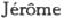
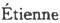
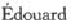
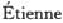
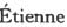
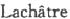
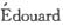
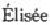

人名索引
A
阿巴思诺特，约翰（Arbuthnot，John公元18世纪）——英国租地农场主，1773年在伦敦出版的匿名著作《当前粮食价格和农场面积相互关系的研究》的作者。——357、379、381、830、836。
阿贝尔，卡尔（Abel，Carl）——德国语文学家和新闻工作者，《每日电讯》柏林通讯员；曾同弗·阿·梅克伦堡一起翻译《帝俄驻北京公使馆关于中国的著述》一书。——150。
阿庇安（Appianos［Appian］1世纪末—2世纪70年代）——古罗马历史学家；曾任执政官；写有二十四卷本《罗马史》。——835。
阿丁顿，斯蒂芬（Addington，Stephen 1729—1796）——英国经济学家，教士；写有一些教科书。——834。
阿基洛库斯（Archilochos［Archilochus］公元前7世纪）——古希腊抒情诗人。——423。
阿基米德（Archimedes公元前287左右—212）——古希腊数学家和力学家。——353。
阿克莱，理查（Arkwright，Sir Richard 1732—1792）——英国企业家，各种纺织机械的设计者和制造者。——426、433、439、488、493、562。
阿里欧斯托，洛多维科（Ariosto，Lodovico 1474—1533）——意大利诗人，长诗《疯狂的罗兰》的作者。——43。
阿里瓦本伯爵，乔万尼（让）（Arrivabene，Giovanni（Jean），conte 1787—1881）——意大利经济学家和翻译家；1847年布鲁塞尔经济会议的发起人；曾把一些经济学著作译成法文。——88。
阿利奇（Arledge，J.T.）——英国医生，1863年在北斯塔福德郡医院任职。——284。
阿林斯沃思，乔冶（Allinsworth，George）——英国一轧钢厂的童工。——299。
阿那卡雪斯（Anacharsis约公元前6世纪）——古代亚细亚民族的哲学家，西徐亚人，希腊人把他列为希腊七大哲人之一。——121。
阿什利勋爵——见舍夫茨别利伯爵，安东尼·阿什利·库珀。
阿什沃思，亨利（Ashworth，Henry 1794—1880）——英国工厂主，资产阶级政治活动家，自由贸易论者，科布顿的拥护者，反谷物法同盟创始人之一；议会议员。——333、467。
阿斯普登，乔治（Aspden，George）——286。
阿泰纳奥斯（Athenaios［Athenaeus］约2世纪）——古希腊雄辩家、语法学家和作家，论述文化史题材的对话集《哲人宴》的作者。——121、156。
埃弗里特（Everet 18世纪）——英国发明家。——493。
埃利斯（Ellis，J.）——301。
埃默里，查理·爱德华（Emery，Charles Edward 1838—1898）——美国发明家。——441。
埃斯克里格（Eskrigge）——英国纺纱厂主，斯托克波特市治安法官。——334。
艾金，约翰（Aikin，John 1747—1822）——英国医生、历史学家和激进派政论家。——685、686、860、869、870。
艾威林，爱德华（Aveling，Edward 1851—1898）——英国作家和政论家，社会民主主义者；1884年起为社会民主同盟盟员，后为社会主义同盟创建人之一，80年代末—90年代初是非熟练工人和失业工人群众运动的组织者之一；1889、1891和1893年国际社会主义工人代表大会代表；《资本论》第一卷英文译者之一，马克思的女儿爱琳娜的丈夫。——31。
爱德华三世（EdwardⅢ1312—1377）——英国国王（1327—1377）。——313、847。
爱德华六世（EdwardⅥ1537—1553）——英国国王（1547—1553）。——843。
爱尔维修，克劳德·阿德里安（Helvétius，Claude-Adrien 1715—1771）——法国哲学家，机械唯物主义的代表人物，无神论者，法国的革命资产阶级的思想家。——704。
爱利莎（Elise）——294、295。
安·斯图亚特（Anna［Ann，Anne］Stuart 1665—1714）——英国女王（1702—1714）。——190、846。
安德森，亚当（Anderson，Adam 1692左右—1765）——苏格兰资产阶级经济学家，写有关于贸易史方面的著作。——855、870。
安德森，詹姆斯（Anderson，James 1739—1808）——苏格兰资产阶级经济学家，研究了级差地租理论的基本特征。——580、646、713、834、838、855。
安谛巴特洛斯（帖撒罗尼迦城的）（Antipatros of Thessalonike约公元前1世纪）——古希腊诗人。——470。
奥德，威廉·密勒（Ord，William Miller 1834—1902）——英国医生。——789。
奥弗斯顿勋爵——见劳埃德，赛米尔·琼斯，奥弗斯顿男爵。
奥格罗特，约翰（O’Groat，John）——842。
奥克尼夫人，伊丽莎白·维利尔斯（Orkney，Elizabeth Villiers，Lady 1657—1733）——英国国王威廉三世（奥伦治的）的情妇。——828、831。
奥雷利，约翰·卡斯帕尔·冯（Orelli，Johann Kaspar von 1787—1849）——瑞士古典语文学家，柏拉图的《理想国》等古典古代著作家著作的出版者。——423。
奥姆斯特德，弗雷德里克·罗（Olmsted，Frederick Law 1822—1903）——美国园林设计师，写有关于英国和北美方面的著作，《普特南氏月刊》的撰稿人；1856年曾到欧洲各国了解公园的设计情况。——229。
奥普戴克，乔治（Opdyke，George 1805—1880）——美国企业家、政治家和经济学家。——191。
奥日埃，马利（Augier，Marie 19世纪中叶）——法国新闻工作者，财政经济学家，写有经济学方面的著作。——871。
奥特利，乔治（Ottley，George）——287。
奥特斯，贾马里亚（Ortes，Giammaria 1713—1790）——意大利经济学家，修道士；重商主义的反对者。——712、744。
奥特韦，约翰·哈斯丁（Otway，John Hastings）——贝尔法斯特法庭庭长。——320。
B
巴顿，约翰（Barton，John 18世纪末—19世纪初）——英国经济学家，资产阶级古典政治经济学的代表人物。——728、776。
巴尔本，尼古拉斯（Barbon，Nicholas约1640—1698）——英国资产阶级经济学家，认为物的价值是由物的有用性决定的；货币国定说的先驱。——48—50、 146、152、168、169、712。
巴尔扎克，奥诺雷·德（Balzac，Honoré de 1799—1850）——法国现实主义作家。——680。
巴拉德，爱德华（Ballard，Edward 1820—1897）——英国医生，伦敦卫生视察员。——539。
巴师夏，弗雷德里克（Bastiat，Frédéric 1801—1850）——法国资产阶级庸俗经济学家，阶级调和论的代表人物。——18、76、100、225、470、649。
巴特勒，赛米尔（Butler，Samuel 1612—1680）——英国讽刺诗人，革命浪漫派的代表；《休迪布腊斯》一诗的作者。——49。
巴泽多，约翰·伯恩哈德（Basedow，Johann Bernhard 1724—1790）——德国教育家，教育改革的倡导者，提倡现实主义的教学方法。——562。
拜比吉，查理（Babbage，Charles 1792—1871）——英国数学家、力学家和资产阶级经济学家。——401、404、432、449、466。
拜耳斯，约翰·巴纳德（Byles，John Barnard 1801—1884）——英国法学家，枢密大臣，托利党人；写有一些关于法律和经济问题的著作。——313、848。
拜特尔，约翰·格奥尔格（Baiter，Johann Georg 1801—1877）——瑞士语文学家，柏拉图的《理想国》等古典古代著作家著作的出版者。——423。
班克斯，乔治（Bankes，George 1788—1856）——英国法学家和政治活动家，托利党人；议会议员，财政部官员。——778。
邦伯里，托马斯·查理（Bunbury，Sir Thomas Charles）——英国经济学家，议会议员。——830。
贝德福德家族——英国贵族世家。——832。
贝恩斯，约翰（Baynes，John）——英国政论家，布莱克本市议会议员；1857年发表了两篇关于棉花贸易的论文。——446、449。
贝尔，查理（Bell，Sir Charles 1774—1842）——苏格兰生理学家和外科医生，在布拉德福德贫民习艺所任职。——322、764。
贝卡里亚侯爵，切扎雷·博内萨纳（Beccaria，Cesare Bonesana，marchese de 1738—1794）——意大利法学家、政论家和经济学家；18世纪资产阶级启蒙运动的代表。——422。
贝克，罗伯特（Baker，Robert）——英国工厂视察员（1878年以前）。——347、460、490、515、816。
贝克尔，伊曼努尔（Bekker，Immanuel 1785—1871）——德国语言学家，整理并出版了古典古代著作家（柏拉图、亚里士多德、阿里斯托芬等）的著作。——178。
贝克莱，乔治（Berkeley，George 1685—1753）——英国哲学家和神学家；主观唯心主义的代表人物；在政治经济学上是重商主义的批评者；认为劳动是财富的主要源泉；货币国定说的代表人物。——389、410。
贝魁尔，康斯坦丁（Pecqueur，Constantin 1801—1887）——法国经济学家，空想社会主义者，圣西门的学生。——709、872。
贝勒斯，约翰（Bellers，John 1654—1725）——英国经济学家；强调劳动对财富形成的意义；曾提出一些空想的社会改革方案。——154、162、170、378、403、492、552、562、709。
贝利，赛米尔（Bailey，Samuel 1791—1870）——英国资产阶级经济学家和哲学家；从庸俗经济学的立场反对李嘉图的劳动价值论，同时也正确地指出了李嘉图的经济学观点中的一些矛盾。——64、71、78、101、102、614、704。
贝内特（Bennett）——631。
贝内特，阿·（Bennet，A.19世纪上半叶）——英国农场主，仲裁人，一所贫民习艺所的管理人。——695。
倍倍尔，奥古斯特（Bebel，August 1840—1913）——德国工人运动和国际工人运动的活动家，职业是旋工；德国工人协会联合会创始人之一，1867年起为主席；第一国际会员，1867年起为国会议员，1869年是德国社会民主党创始人和领袖之一，《社会民主党人报》创办人之一；曾进行反对拉萨尔派的斗争，普法战争时期站在无产阶级国际主义立场，捍卫巴黎公社；1889、1891和1893年国际社会主义工人代表大会代表；第二国际的活动家，在19世纪90年代和20世纪初反对改良主义和修正主义；马克思和恩格斯的朋友和战友。——41。
本（Benn）——863。
比彻-斯托，哈丽雅特·伊丽莎白（Beecher-Stowe，Harriet Elizabeth 1811—1896）——美国女作家，美国废奴运动的积极参加者；《汤姆叔叔的小屋》的作者。——839。
比多（Bidaut，J.N.19世纪上半叶）——法国政论家，国家官员；写有关于经济问题的文章。——372。
比泽，弗兰茨（Biese，Franz 1803—1895）——德国教育家、语言学家和哲学家，写有论亚里士多德哲学的著作。——469。
毕舍，菲力浦·约瑟夫·本杰明（Buchez，Philippe-Joseph-Benjamin 1796—1865）——法国政治活动家和历史学家，资产阶级共和党人，1821年起为圣西门的学生，七月革命后是基督教社会主义的思想家；国民议会议长（1848）。——851。
边沁，耶利米（Bentham，Jeremy 1748—1832）——英国社会学家、哲学家和经济学家，功利主义理论的主要代表，主张效用原则是社会生活的基础。——204、704。
波拿巴，路易——见拿破仑第三。
波斯尔思韦特，玛拉基（Postlethwayt，Malachy 1707—1767）——英国经济学家，《工商业大辞典》的编者。——316、317。
波特尔，阿朗索（Potter，Alonzo 1800—1865）——美国哲学家和经济学家，1815年起为宾夕法尼亚的主教；曾在一些院校教授神学。——689。
波特尔，埃德蒙（Potter，Edmund）——英国工厂主和政治活动家，自由贸易的拥护者，60年代初是曼彻斯特商会会长，议会议员。——341、662—665。
伯克，埃德蒙（Burke，Edmund 1729—1797）——英国政论家和政治活动家，辉格党人，后为托利党人，议会议员，重农主义者；初期倾向自由主义，后为18世纪末法国资产阶级革命的反对者；写有经济学方面的著作。——240、272、375、832、871。
伯里克利（Perikles［Pericles］公元前495左右—429）——雅典国务活动家，战略家（公元前444—429）；曾促进奴隶主民主制的巩固。——423。
勃艮第公爵和伯爵——见菲力浦第一·罗弗尔。
柏拉图（Platon［Plato］约公元前427—347）——古希腊哲学家，客观唯心主义的主要代表人物，奴隶主贵族的思想家，自然经济的拥护者。——423、424。
博尔顿，马修（Boulton，Matthew 1728—1809）——英国工程师和工厂主。——434、446。
博克斯霍恩，马尔库斯·聚埃里乌斯（Boxhorn，Marcus Zuerius 1612—1653）——荷兰历史编纂学家和语言学家。——493。
博林布罗克子爵，亨利·圣约翰（Bolingbroke，Henry Saint-John，Viscount 1678—1751）——英国自然神论哲学家、政论家和政治活动家，托利党领袖。——866。
布阿吉尔贝尔，皮埃尔·勒珀桑（Boisguillebert，Pierre Le Pesant 1646—1714）——法国经济学家和统计学家，重农学派的先驱，法国资产阶级古典政治经济学的创始人；写有《法国详情》和其他经济学著作。——153、164。
布坎南，大卫（Buchanan，David 1779—1848）——英国政论家和资产阶级经济学家；亚·斯密的学生，斯密著作的出版者和注释者。——149、644、838。
布莱基，罗伯特（Blakey，Robert 1795—1878）——英国哲学家。——829。
布莱斯，阿道夫·古斯塔夫（Blaise，Adolph-Gustave 1811—1886）——法国经济学家，日罗姆·阿道夫·布朗基的著作的编者。——391。
布莱特，约翰（Bright，John 1811—1889）——英国政治家，棉纺厂主，自由贸易派领袖和反谷物法同盟创始人；60年代初起为自由党（资产阶级激进派）左翼领袖；曾多次任自由党内阁的大臣。——17、296、327、642、749、781、859。
布朗基，路易·奥古斯特（Blanqui，Louis-Auguste 1805—1881）——法国革命家，空想共产主义者，主张通过密谋性组织用暴力夺取政权和建立革命专政；许多秘密社团和密谋活动的组织者，1830年七月革命和1848年二月革命的参加者，秘密的四季社的领导人，1839年五月十二日起义的组织者，同年被判处死刑，后改为无期徒刑；1848—1849年革命时期是法国无产阶级运动的领袖；巴黎1870年十月三十一日起义的领导人，巴黎公社时期被反动派囚禁在凡尔赛，曾缺席当选为公社委员；一生中有36年在狱中度过。——319。
布朗基，日罗姆·阿道夫（Blanqui，-Adolphe 1798—1854）——法国经济学家和经济学说史学家，庸俗政治经济学的代表人物，路·奥·布朗基的哥哥。——319、391。
布雷，约翰·弗兰西斯（Bray，John Francis 1809—1895）——英国经济学家，空想社会主义者，罗·欧文的信徒；职业是印刷工人；发展了“劳动货币”的理论。——85。
布林德利，詹姆斯（Brindley，James 1716—1772）——英国机械师和发明家。——404。
布鲁姆，亨利·彼得，布鲁姆-沃克斯勋爵（Brougham，Henry Peter，Lord Brougham and Vaux 1778—1868）——英国国务活动家、法学家和文学家；辉格党人，20—30年代是自由贸易的拥护者，曾任大法官（1830—1834），曾促进1832年选举改革的实施；议会议员。——870。
布鲁纳，约翰·康拉德（Brunner，Johann Konrad 1653—1727）——德国医生。——555。
布鲁斯（Bruce）——570。
布伦坦诺，路德维希·约瑟夫（路约）（Brentano，Ludwig Joseph［Lujo］1844— 1931）——德国资产阶级庸俗经济学家，讲坛社会主义者。——42—43。
布罗德赫斯特，约翰（Broadhurst，John 19世纪）——英国经济学家，资产阶级庸俗政治经济学的代表人物。——70。
布罗迪，本杰明·柯林斯（Brodie，Sir Benjamin Collins 1783—1862）——英国外科医生和生理学家。——322。
布罗顿（Broughton）——282。
布洛克，莫里斯（Block，Maurice 1816—1900）——法国资产阶级统计学家和经济学家，庸俗政治经济学的代表。——20。
布思罗伊德（Boothroyd）——284。
布瓦洛，埃蒂耶纳（Boileau，1200—1269）——法国商人，巴黎商会会长，记述巴黎手工业行会的《手工业手册》一书作者。——559。
布瓦洛-德普雷奥，尼古拉（Boileau-Despréaux，Nicolas 1636—1711）——法国诗人和文学评论家，法国古典文学的代表；《读经台》的作者。——752。
C
查理大帝——见查理一世，查理大帝。
查理一世（CharlesⅠ1600—1649）——英国国王（1625—1649），17世纪英国资产阶级革命时期被处死。——828、829。
查理一世，查理大帝（CharlesⅠ，Charlemagne 742—814）——法兰克国王（768—800）和皇帝（800—814）。——835。
查理二世（CharlesⅡ1630—1685）——英国国王（1660—1685）。——148。
查理五世（Karl V 1500—1558）——德意志神圣罗马帝国皇帝（1519—1556），称查理五世；曾为西班牙国王（1516—1556），称查理一世；拉萨尔的剧本《弗兰茨·冯·济金根》中查理五世的原型。——846。
查理六世（KarlⅥ1685—1740）——德意志神圣罗马帝国皇帝（1711—1740），莱奥波德一世之子。——493。
查理十世·古斯塔夫（Karl X Gustaf 1622—1660）——瑞典国王（1654—1660）。——832。
查理十一世（KarlⅪ1655—1697）——瑞典国王（1660—1697）。——832。
查默斯，托马斯（Chalmers，Thomas 1780—1847）——苏格兰神学家和资产阶级经济学家；马尔萨斯的追随者。——179、189、712、713。
柴尔德，乔赛亚（Child，Josiah 1630—1699）——英国商人，经济学家和银行家；重商主义者；东印度公司董事长。——109、871。
车尔尼雪夫斯基，尼古拉·加甫里洛维奇（Ч е р н ы ш е в с к и й ，Н и к о л а й Г а в р и л о в и ч 1828—1889）——俄国革命民主主义者，作家和文艺批评家，经济学家，哲学家。——17。
D
达尔豪西侯爵和伯爵，詹姆斯·安德鲁·布龙-拉姆齐（Dalhousie，James Andrew Broun-Ramsay，Marquess and Earl of 1812—1860）——英国政治活动家，皮尔分子，议会议员，曾任印度总督（1848—1856），执行殖民主义掠夺政策。——842。
达尔文，查理·罗伯特（Darwin，Charles Robert 1809—1882）——英国自然科学家，科学的生物进化论的奠基人。——396、429。
达菲，查理·加万（Duffy，Charles Gavan 1816—1903）——爱尔兰政治活动家和新闻工作者，“青年爱尔兰”领导人和保障租佃者权利同盟创建人之一，议会议员；1856年流亡澳大利亚，曾多次任国家职务。——886。
达菲，威廉（Duffy，William）——286。
达弗林侯爵，弗雷德里克·坦普尔·汉密尔顿·坦普尔·布莱克伍德（Dufferin，Frederick Temple Hamilton-Temple-Blackwood，Marquess of 1826—1902）——英国国务活动家和外交家，自由党人，爱尔兰大地主，曾参加格莱斯顿内阁（1868—1872），加拿大总督（1872—1878），驻彼得堡大使（1879—1881），驻君士坦丁堡大使（1881—1882），驻埃及大使（1882—1883），印度总督（1884—1888）。——817。
但丁·阿利格埃里（Dante Alighieri 1265—1321）——意大利诗人。——124、286。
道布尔迪，托马斯（Doubleday，Thomas 1790—1870）——英国政论家和经济学家。——867。
道默，格奥尔格·弗里德里希（Daumer，Georg Friedrich 1800—1875）——德国作家，写有一些宗教史方面的著作。——332。
德·昆西，托马斯（De Quincey，Thomas 1785—1859）——英国著作家和经济学家，李嘉图著作的注释者。——455。
德比伯爵，爱德华·乔治·杰弗里·斯密斯·斯坦利，（比克斯塔夫的）斯坦利勋爵（Derby，Edward George Geoffrey Smith Stanley，Lord Stanley of Bickerstaffe，Earl of 1799—1869）——英国政治活动家，托利党领袖，19世纪下半叶为保守党领袖；曾任殖民大臣和陆军大臣（1833—1834和1841—1845），内阁首相（1852、1858—1859和1866—1868）。——524。
德尔，路易·弗朗索瓦·欧仁（Daire，Louis-Francois-Eugène 1798—1847）——法国著作家和资产阶级经济学家，政治经济学著作的出版者。——49、110、130、132、165、185、365。
德库，萨洛蒙（De Cous，Salomon 1576—1626）——法国建筑师和工程师。——433。
德莱登，约翰（Dryden，John 1631—1700）——英国诗人和剧作家，古典主义的代表。——280。
德斯杜特·德·特拉西伯爵，安东·路易·克劳德（Destutt de Tracy，Antoine-Louis-Claude，comte de 1754—1836）——法国经济学家、感觉论哲学家和政治家；哲学上观念学派创始人；立宪君主制的拥护者。——98、183、190、378、380、746。
邓宁，托马斯·约瑟夫（Dunning，Thomas Joseph 1799—1873）——英国工会活动家和政论家。——634、637、871。
狄奥多鲁斯（西西里的）（Diodorus Siculus公元前80左右—29）——古希腊历史学家，住在罗马；世界史《史学丛书》的作者。——167、273、394、425、587。
狄慈根，约瑟夫（Dietzgen，Joseph 1828—1888）——德国社会民主党人，自学成功的哲学家，独立地得出了辩证唯物主义若干原理；职业是制革工人，1848—1849年革命的参加者，1852年成为共产主义者同盟盟员；社会民主工党党员和国际会员，国际海牙代表大会（1872）代表。——18。
狄德罗，德尼（Diderot，Denis 1713—1784）——法国哲学家，机械唯物主义的代表人物，无神论者，法国革命资产阶级的代表，启蒙思想家，百科全书派领袖；1749年因自己的著作遭要塞监禁。——157。
迪尔克，查理·温特沃思（Dilke，Charles Wentworth 1789—1864）——英国政论家和出版者。——678。
笛福，丹尼尔（Defoe，Daniel 1660左右—1731）——英国作家和政论家，小说《鲁滨逊飘流记》的作者。——164、711。
笛卡儿，勒奈（Descartes，René 1596—1650）——法国二元论哲学家、数学家和自然科学家。——448。
蒂利—亨德森（Tillie＆Henderson）——印度伦敦德里的衬衫厂。——531、 545。
都铎王朝——英国王朝（1485—1603）。——858。
杜邦，皮埃尔（Dupont，Pierre 1821—1870）——法国作曲家，他的《工人之歌》在工人中广为流传。——798。
杜尔哥，安娜·罗伯尔·雅克，洛恩男爵（Turgot，Anne-Robert-Jacques，baron的代表，魁奈的学生，财政总稽查（1774—1776）。——210、365、611。
杜克佩西奥，爱德华（Ducpétiaux，1804—1868）——比利时政论家和统计学家，资产阶级慈善家，监狱和慈善设施视察员。——772、774。
杜鲁门（Truman）——536。
杜蒙，皮埃尔·埃蒂耶纳·路易（Dumont，Pierre--Louis 1759— 1829）——瑞士传教士和政论家；米拉波和边沁的秘书，边沁著作的出版者。——704。
杜能，约翰·亨利希·冯（Thünen，Johann Heinrich von 1783—1850）——德国资产阶级经济学家，研究过农业经济问题，他在《孤立国家》中提出了按最大利润原则来配置农业的理论和环状生产分布的构想。——717。
E
厄什韦葛，威廉·路德维希·冯（Eschwege，Wilhelm Ludwig von 1777—1855）——德国地质学家和地理学家；矿工；写有关于采矿工程的著作。——53。
恩布尔顿（Embleton）——762。
恩索尔，乔治（Ensor，George 1769—1843）——英国政论家，马尔萨斯主义的批评者。——838。
F
法尔，约翰·理查（Farre，John Richard 1774—1862）——英国医生。——322—323。
范德林特，杰科布（Vanderlint，Jacob死于1740年）——英国经济学家，重农学派的先驱，货币数量论的早期代表。——146、154、169、316、318、364、384、403、712。
菲尔登，约翰（Fielden，John 1784—1849）——英国厂主，慈善家；议会议员，工de l’Aulne 1727—1781）——法国国务活动家、经济学家和哲学家；重农学派厂立法的拥护者。——464、475、869。
菲力浦第一·罗弗尔（PhilippeⅠde Rouvres 1346—1361）——勃艮第公爵（1349—1361）。——854。
菲力浦六世·瓦卢瓦（PhilippeⅥde Valois 1293—1350）——法国国王（1328—1350）。——110。
菲瑟灵，西蒙（Vissering，Simon 1818—1888）——荷兰资产阶级经济学家和统计学家，庸俗政治经济学的代表。——577。
费尔贝恩，威廉（Fairbairn，William 1789—1874）——英国厂主，工程师和发明家。——501。
费里埃，弗朗索瓦·路易·奥古斯特（Ferrier，Francois-Louis-Auguste 1777—1861）——法国资产阶级庸俗经济学家，保护关税制度的拥护者和重商主义的模仿者，国家官员。——76。
费伦德，威廉·布什菲尔德（Ferrand，William Bushfield 1809—1889）——英国政治家，托利党人，议会议员，贵族慈善运动的主要代表。——308、309、479、662。
费希特，约翰·哥特利布（Fichte，Johann Gottlieb 1762—1814）——德国哲学家，德国古典哲学的代表人物，主观唯心主义者。——67。
丰特雷，安东·路易（Fonteret，Antoine-Louis）——法国医生，19世纪下半叶写有一些公共卫生方面的著作。——420。
弗格森，亚当（Ferguson，Adam 1723—1816）——苏格兰历史学家、哲学家和社会学家；休谟的追随者，亚·斯密的老师。——145、410、418、419。
弗莱彻，安德鲁（Fletcher，Andrew 1655—1716）——苏格兰政治家，地主，维护苏格兰的独立。——829。
弗赖塔格，古斯塔夫（Freytag，Gustav 1816—1895）——德国资产阶级作家和新闻工作者。——849。
弗里德里希二世，弗里德里希大帝（FriedrichⅡ，Friedrich der Groβe 1712—1786）——普鲁士国王（1740—1786）。——841、855。
弗利特伍德，威廉（Fleetwood，William 1656—1723）——英国主教，写有英国价格史方面的著作。——314。
弗尼霍夫，约翰（Fernyhough，John）——284。
弗农（Vernon）——831。
孚耳阿伯，约翰（Faulhaber，Johann 1580—1635）——德国数学家和工程师。——433。
孚赫，茹尔（尤利乌斯）（Faucher，Jules［Julius］1820—1878）——德国政论家和资产阶级庸俗经济学家，青年黑格尔分子；自由贸易的拥护者；1850年为柏林《晚邮报》的创办人和编辑；1850—1861年侨居英国，为《晨星报》的撰稿人，写有住宅问题的著作；1851年为《伦敦新闻画报》德文版编辑；1861年回到德国，后为进步党人，1866年起为民族自由党人。——278、536—537。
福布斯（Forbes19世纪）——英国发明家。——450。
福蒂斯丘，约翰（Fortescue，John约1394—1476）——英国法学家，财政大臣，写有一些关于英国国家制度的著作。——825、826。
福尔邦奈，弗朗索瓦·韦龙·杜韦尔热·德（Forbonnais，Francois Véron-Duyerger de 1722—1800）——法国资产阶级经济学家和金融家；货币数量论的拥护者，重农主义的反对者。——110。
福塞特，亨利（Fawcett，Henry 1833—1884）——英国资产阶级庸俗经济学家，约·斯·穆勒的信徒，1865年起为议会议员，自由党人。——642、706、752、859。
福斯特，纳撒尼尔（Forster，Nathaniel 1726左右—1790）——英国教士，写有一些经济学著作，维护工人的利益。——316、492、587、833、834。
福斯特，威廉·爱德华（Forster，William Edward 1818—1886）——英国工厂主和政治活动家，自由党人，议会议员（1861年起），曾任爱尔兰事务大臣（1880—1882）；奉行残酷镇压爱尔兰民族解放运动的政策。——764。
富尔顿，罗伯特（Fulton，Robert 1765—1815）——美国工程师和发明家，1803年建造了第一艘轮船。——562。
富拉顿，约翰（Fullarton，John 1780—1849）——英国经济学家，货币数量论的反对者；写有一些关于货币流通和信贷问题的著作。——151、165、169。
富兰克林，本杰明（Franklin，Benjamin 1706—1790）——美国政治活动家、外交家、经济学家、作家和自然科学家；美国启蒙运动的代表人物，美国独立战争的参加者，美国独立宣言（1776）的起草人之一；他最先有意识地用劳动时间来确定价值。——65、191、210、379、711。
傅立叶，沙尔（Fourier，Charles 1772—1837）——法国空想社会主义者。——335、441、491、800。
G
哥伦布，克里斯托弗尔（Colombo，Christoforo 1451—1506）——意大利航海家；在西班牙供职，在四次航海（1492—1504）过程中，发现并考察了加勒比群岛以及中美洲沿海地区和南美洲的东北地区。——155。
哥特舍德，约翰·克里斯托夫（Gottsched，Johann Christoph 1700—1766）——德国作家、文艺评论家和理论家，18世纪德国早期启蒙运动的代表人物，对当时德国戏剧的改革和文学语言的规范化起了一定作用，后来坚持陈旧观点，停止不前。——251。
戈登，约翰（Gordon，Sir John 1798—1862）——爱尔兰医生；科克市市长。——203。
戈东诺夫，波里斯·费多罗维奇（Г о д у н о в ，Б о р и с Ф е д о р о в и ч 1551左右—1605）——俄国沙皇（1598—1605）。——831。
戈弗雷（Godfrey）——454。
格迪斯（Geddes，J.）——463。
格莱斯顿，威廉·尤尔特（Gladstone，William Ewart 1809—1898）——英国国务活动家，托利党人，后为皮尔分子，19世纪下半叶是自由党领袖；曾任财政大臣（1852—1855和1859—1866）和首相（1868—1874、1880—1885、1886和1892—1894）。——38、42—44、520、750、751。
格雷，乔治（Grey，George 1799—1882）——英国国务活动家，辉格党人，曾任内务大臣（1846—1852、1855—1858和1861—1866）和殖民大臣（1854—1855）。——333、765。
格雷，约翰（Gray，John 18世纪末）——英国著作家，写有一些关于政治问题和经济问题的著作。——187。
格雷，约翰（Gray，John 1798—1850）——英国经济学家；空想社会主义者，罗·欧文的信徒；发展了“劳动货币”的理论。——85。
格雷格，罗伯特·海德（Greg，Robert Hyde 1795—1875）——英国大厂主，自由党人，自由贸易的拥护者。——337。
格雷古瓦，昂利·利特雷格（Gregoir，Henri Litreg 19世纪下半叶）——比利时工人，布鲁塞尔印刷工人协会书记，《布鲁塞尔轻罪法庭上的印刷工人》（1865）一书的作者。——639。
格林豪，爱德华·黑德勒姆（Greenhow，Edward Headlam 1814—1888）——英国医生和公共卫生学家。——283、284、339。
格罗夫，威廉·罗伯特（Grove，William Robert 1811—1896）——英国物理学家和法学家。——602。
格思里，詹姆斯（Guthrie，James 1785—1856）——英国医生。——322。
H
哈勒，卡尔·路德维希·冯（Haller，Carl Ludwig von 1768—1854）——瑞士法学家和历史学家，阿·冯·哈勒的儿子。——448。
哈里斯（Harris）——527。
哈里斯——见马姆兹伯里伯爵，詹姆斯·哈里斯。
哈里斯，詹姆斯（Harris，James 1709—1780）——英国语文学家和哲学家，国务活动家，议会议员，财政部部务委员（1763—1765）。——422。
哈里逊，威廉（Harrison，William 1534—1593）——英国教士，他写的好些著作是研究英国16世纪历史的有价值的资料。——825、852。
哈利法克斯侯爵，乔治·萨维尔（Halifax，Sir George Savile，Marquis of 1633—1695）——英国国务活动家。——122、831。
哈鲁普（Harrup）——490。
哈姆，威廉（Hamm，Wilhelm 1820—1880）——德国农学家，写有一些农业问题的著作。——578。
哈斯丁，沃伦（Hastings，Warren 1732—1818）——英国政治活动家，英国第一任印度总督（1774—1785），同时任职于东印度公司，实行残酷的殖民政策，因滥用职权于1788年被提交法庭，但被宣告无罪并由公司赔偿损失。——862。
哈索尔，阿瑟·希尔（Hassall，Arthur Hill 1817—1894）——英国医生，写有一些关于公共卫生问题的著作。——203、288。
哈维（Harvey）——116。
哈维，威廉（Harvey，William 1578—1657）——英国医生、生理学家和胚胎学家，科学生理学的创始人和胚胎学研究的倡导者；1628年发现血液循环系统。——116。
哈西，维维安（Hussey，Vivian 19世纪）——英国矿主，1866年为议会矿山调查委员会委员。——570。
海恩斯，耶利米（Haynes，Jeremiah）——300。
海涅，亨利希（Heine，Heinrich 1797—1856）——德国诗人，革命民主主义运动的先驱，马克思一家的亲密朋友。——704。
汉密尔顿，威廉（Hamilton，William 1788—1856）——苏格兰哲学家，不可知论者；杜格尔德·斯图亚特著作的编者。——372、559。
汉森，格奥尔格（Hanssen，Georg 1809—1894）——德国资产阶级经济学家；写有关于农业和土地关系史问题的著作。——275。
汉特，亨利·朱利安（Hunter，Henry Julian 19世纪）——英国医生，写有许多关于工人困苦生活条件方面的报告。——458、758—759、761—763、767、781、785、787、788—791、796、797、828。
豪威耳，托马斯·琼斯（Howell，Thomas Jones死于1858年）——英国工厂视察员。——263、279。
豪伊特，威廉（Howitt，William 1792—1879）——英国著作家，写有基督教的历史和许多其他问题的著作。——861。
荷马（Homeros约公元前8世纪）——半传说中的古希腊诗人，《伊利亚特》和《奥德赛》的作者。——78。
赫顿，查理（Hutton，Charles 1737—1823）——英国数学家。——428。
赫弗，斐迪南（Hoefer，Ferdinand 1819—1882）——法国出版商，原系德国人。——588。
赫拉克利特（Herakleitos约公元前540—480）——古希腊哲学家，辩证法的奠基人之一，自发的唯物主义者。——126。
赫伦施万德，让（Herrenschwand，Jean 1728—1812）——瑞士资产阶级经济学家。——144。
赫胥黎，托马斯·亨利（Huxley，Thomas Henry 1825—1895）——英国自然科学家，生物学家；达尔文的朋友和信徒，及其学说的普及者，在哲学方面是不彻底的唯物主义者。——555。
黑格尔，乔治·威廉·弗里德里希（Hegel，Georg Wilhelm Friedrich 1770—1831）——德国古典哲学的主要代表。——20、22、58、110、196、209、303、358、421、679。
亨利三世（HenriⅢ1551—1589）——法国国王（1574—1589）。——155。
亨利七世（HenryⅦ1457—1509）——英国国王（1485—1509）。——314、826、843。
亨利八世（HenryⅧ1491—1547）——英国国王（1509—1547）。——826、843。
胡阿雷斯，贝尼托·帕布洛（Juárez［Juarez］，Benito Pablo 1806—1872）——墨西哥国务活动家，内战（1858—1860）和法国武装干涉墨西哥（1861—1867）时期为自由党的领袖，墨西哥总统（1858—1872）。——196。
华德，约翰（Ward，John 19世纪）——英国历史学家，《维多利亚女王陛下在位初期的特伦特河畔斯托克城》（1843）一书的作者。——308。
华莱士，罗伯特（Wallace，Robert 1697—1771）——英国教士和统计学家，提出了人口论，后为马尔萨斯所利用。——408、711。
华氏（华伦海特），加布里埃尔·丹尼尔（Fahrenheit，Gabriel Daniel 1686—1736）——荷兰物理学家，设计过一种改良温度计。——290、343。
怀特（White）——286、298、302、305、463、540、542。
怀特（White，W.）——554。
淮亚特，约翰（Wyatt，John 1700—1766）——英国技师，曾发明纺纱机。——428。
惠特布雷德，赛米尔（Whitbread，Samuel 1758—1815）——英国政治活动家，议会议员，辉格党人。——849。
惠特尼，伊莱（Whitney，Eli 1765—1825）——美国发明家，曾发明轧棉机。——441、449。
霍布豪斯，约翰·卡姆，布罗顿男爵（Hobhouse，John Cam，Baron Broughton 1786—1869）——英国国务活动家，辉格党人；1831年的工厂法的倡导者；曾任印度事务督察委员会主席（1835—1841和1846—1852）。——334。
霍布斯，托马斯（Hobbes，Thomas 1588—1679）——英国哲学家，机械唯物主义的代表人物，早期资产阶级天赋人权理论的代表。——198、448、712。
霍顿，约翰（Houghton，John死于1705年）——英国商人和经济学家，写有一些关于商业、工业和农业问题的著作。——492。
霍恩，乔治（Horne，George 1730—1792）——英国主教，写有抨击牛顿、休谟、亚·斯密和其他学者的小册子。——713。
霍尔，克里斯托弗·纽曼（Hall，Christopher Newman 1816—1902）——英国教士，高级僧侣中的代表人物。——296。
霍华德·德·沃尔登男爵，查理·奥古斯塔斯·埃利斯（Howard de Walden，Charles Augustus Ellis，Baron 1799—1868）——英国外交官。——319。
霍吉斯金，托马斯（Hodgskin，Thomas 1787—1869）——英国经济学家和政论家，空想社会主义者；他以李嘉图的理论为依据，批判资本主义，维护无产阶级的利益。——394、408、411、615、662、860。
霍林舍德，拉斐尔（Holinshed，Raphael约死于1580年）——英国历史学家，写有英国、苏格兰、爱尔兰自远古时代至16世纪70年代的编年史。——825、 845。
霍纳，弗兰西斯（Horner，Francis 1778—1817）——英国资产阶级经济学家和政治活动家；议会议员，辉格党人，金条委员会主席（1810），李嘉图货币论的追随者。——869。
霍纳，伦纳德（Horner，Leonard 1785—1864）——英国地质学家和社会活动家，曾任工厂视察员（1833—1859），维护工人利益。——259、260、279、320、325、329、333、335、341、460、461、476、477、491、634。
霍普金斯，托马斯（Hopkins，Thomas 19世纪初）——英国资产阶级经济学家。——266。
J
基尔希曼，尤利乌斯·海尔曼（Kirchmann，Julius Hermann 1802—1884）——德国法学家、政论家和哲学家，自由党人；1848年为普鲁士国民议会议员，属于中间派左翼，后为普鲁士邦议会议员和德意志帝国国会议员；写有哲学和法学方面的著作。——608。
基林，安（Killin，Ann）——461。
基斯（Keys）——295。
吉尔摩（Gilmore）——499。
吉洛特，约瑟夫（Gillott，Joseph 1799—1873）——英国工厂主，在伯明翰首先实行钢笔尖的大规模生产。——530。
吉斯伯恩，托马斯（Gisborne，Thomas 1758—1846）——英国神学家，写有一些基督教道德问题的著作。——869。
季别尔，尼古拉·伊万诺维奇（З и б е р ，Н и к о л а й И в а н о в и ч 1844—1888）——俄国经济学家，俄国第一批马克思经济学著作的通俗化作家之一。——19。
加德纳，罗伯特（Gardner，Robert）——英国棉纺厂厂主，1844年将开设在普雷斯顿各企业的工作日从12小时缩减到11小时。——473、476。
加尔涅伯爵，热尔曼（Garnier，Germain，comte de 1754—1821）——法国经济学家和政治活动家，保皇党人；重农学派的模仿者，亚·斯密著作的翻译者和注释者。——419、635。
加利阿尼，斐迪南多（Galiani，Ferdinando 1728—1787）——意大利经济学家；重农学派学说的反对者；认为物的价值是由物的有用性决定的，同时对商品和货币的本性作了一些正确的猜测。——91、108、110、120、179、185、366、741。
加尼耳，沙尔（Ganilh，Charles 1758—1836）——法国政治活动家，资产阶级庸俗经济学家和重商主义的模仿者。——76、99、202、210、515。
加斯克尔，彼得（Gaskell，Peter 19世纪上半叶）——英国医生和政论家；自由党人。——501、511。
杰科布，威廉（Jacob，William 1762左右—1851）——英国商人和著作家，写有经济学著作。——53、254。
杰伊（Jay）——766。
金凯德，约翰（Kincaid，John 1787—1862）——英国官员，1850年起为苏格兰工厂和监狱视察员。——461。
居利希，古斯塔夫·冯（Gülich，Gustav von 1791—1847）——德国资产阶级经济学家和经济史学家，德国小资产阶级保护关税派领袖；写有国民经济史方面的著作。——15、864。
居维叶男爵，若尔日·莱奥波德·克雷蒂安·弗雷德里克·达哥贝尔特（Cuvier，Georges-Léopold-Chrétien-Frédéric-Dagobert，baron de 1769—1832）——法国动物学家和古生物学家；曾经将比较解剖学上升为科学，并提出了灾变论。——588。
K
卡尔利伯爵，乔万尼·里纳尔多（Carli，Giovanni Rinaldo，conte 1720—1795）——意大利学者，重商主义的反对者；写有一些关于货币和谷物贸易的著作。——382。
卡耳佩珀，托马斯（Culpeper，Sir Thomas 1578—1662）——英国经济学家，重商主义的拥护者。——871。
卡莱尔，安东尼（Carlisle，Sir Anthony 1768—1840）——英国外科医生。——322。
卡莱尔，托马斯（Carlyle，Thomas 1795—1881）——英国作家、历史学家和唯心主义哲学家，宣扬英雄崇拜，封建社会主义的代表，资本主义生产方式和资产阶级政治经济学的批评者，托利党人；1848年后成为工人运动的敌人。——296。
卡莱尔父子公司（Carlile，Sons&Co.）——苏格兰佩斯利的一家棉麻纺纱厂。——360。
卡姆梅尔（Cammell）——302。
卡斯尔雷子爵——见斯图亚特，亨利·罗伯特，卡斯尔雷子爵。
卡泽诺夫，约翰（Cazenove，John 1788—1879）——英国庸俗经济学家，马尔萨斯的追随者。——231、369、598、655、668、688。
凯尔恩斯，约翰·埃利奥特（Cairnes，John Elliot 1823—1875）——英国经济学家和政论家；反对美国南部的奴隶制度。——229、308、386。
凯尔森（Kelson）——766。
凯里，亨利·查理（Carey，Henry Charles 1793—1879）——美国资产阶级庸俗经济学家，阶级调和论的创始人。——252、610、648、839、858。
凯特勒，阿道夫·朗贝尔·雅克（Quételet，Adolphe-Lambert-Jacques 1796—1874）——比利时统计学家、数学家和天文学家；“平均的个人”论的创立者。——375。
坎伯尔，乔冶（Campbell，Sir George 1824—1892）——英国国务活动家和外交官，议会议员（1875—1892），自由党人；1843—1874年屡任英国驻印度的殖民官员；写有关于印度的著作。——414。
康替龙，菲力浦（Cantillon，Philip）——英国经济学家，1759年他修订出版了理·康替龙《试论一般商业的性质》一书的英文版本。——639。
康替龙，理查（Cantillon，Richard 1680—1734）——英国经济学家，商人，重农学派和亚·斯密的先驱。——639、712。
考威尔（Cowell，J.W.）——646。
柯贝特，托马斯（Corbet，Thomas 19世纪）——英国资产阶级经济学家，李嘉图的追随者。——176、680。
柯尔培尔，让·巴蒂斯特（Colbert，Jean-Baptiste 1619—1683）——法国国务活动家，重商主义者，财政督察长（1661年起），实际上操纵了法国的内外政策；曾建立国家工场，促进内外贸易。——358、867。
柯普，海尔曼·弗兰茨·莫里茨（Kopp，Hermann Franz Moritz 1817—1892）——德国化学家和化学史学家；曾把新的物理测量方法用于化学；李比希的学生，肖莱马的老师。——358。
科贝特，威廉（Cobbett，William 1762—1835）——英国政治活动家和政论家，小资产阶级激进派的代表人物，曾为英国政治制度的民主化进行斗争；1802年起出版《纪事年鉴》和《科贝特氏政治纪事周报》。——334、829、864、867。
科布顿，理查（Cobden，Richard 1804—1865）——英国工厂主，自由党人，自由贸易的拥护者，反谷物法同盟创始人，议会议员（1841—1864）；曾参加多次国际和平主义者代表大会，如1850年8月美因河畔法兰克福和平主义者代表大会。——17、296、327、781。
科尔邦，克劳德·昂蒂姆（Corbon，Claude-Anthime 1808—1891）——法国政治活动家，共和党人，第二共和国时期任制宪议会副议长（1848—1849）；第二帝国崩溃后任巴黎市第15区区长，1871年国民议会议员，属于左派少数派。——561。
科兰男爵，让·吉约姆·塞扎尔·亚历山大·伊波利特（Colins，Jean-Guillaume-César-Alexandre-Hippolyte，baron de 1783—1859）——法国经济学家，原系比利时人；主张由国家征收地租，以解决资本主义制度的一切社会矛盾。——709、798、885。
克莱门特，西蒙（Clement，Simon 17世纪末）——英国商人，匿名著作《论货币、贸易、汇兑的相互关系的一般概念》（1695）的作者。——109。
克劳伦，亨利希（Clauren，Heinrich原名哥特洛布·赛米尔·卡尔·霍伊恩Gottlob Samuel Carl Heun 1771—1854）——德国作家，写有一些感伤主义小说。——258。
克劳生，彼得（Claussen，Pieter）——比利时发明家，圆编机的改进者。——428。克雷格（Craig）——165。
克虏伯，阿尔弗勒德（Krupp，Alfred 1812—1887）——德国大工业家，埃森冶金厂和兵工厂厂主；曾向欧洲许多国家供应枪炮和其他军火。——449。
克伦威尔，奥利弗（Cromwell，Oliver 1599—1658）——英国国务活动家，17世纪英国资产阶级革命时期资产阶级和资产阶级化贵族的领袖；1649年起为爱尔兰军总司令和爱尔兰总督，1653年起为英格兰、苏格兰和爱尔兰的护国公。——858。
克罗克，罗杰（Crocker，Roger）——828。
克肖—利斯公司（Kershaw，Leese&Co.）——英国斯托克波特一家纺纱厂。——334。
肯尼特，怀特（Kennet，White 1660—1728）——英国主教和历史学家。——827。
肯宁安，约翰（Cunningham，John 1729—1773）——英国著作家和经济学家。——268、270、317、625、692、733。
肯特，纳撒尼尔（Kent，Nathaniel 1737—1810）——英国农学家，写有农业方面的著作。——834。
孔德，奥古斯特（Comte，Auguste 1798—1857）——法国哲学家和社会学家，实证论的创始人。——19、386。
孔德，弗朗索瓦·沙尔·路易（Comte，Francois-Charles-Louis 1782—1837）——法国自由主义政论家和庸俗经济学家。——861。
孔狄亚克，埃蒂耶纳·博诺·德（Condillac，-Bonnot de 1715— 1780）——法国经济学家和自然神论哲学家，感觉论者；认为物的价值是由物的有用性决定的；约·洛克的追随者。——185。
孔多塞侯爵，玛丽·让·安东·尼古拉·卡里塔（Condorcet，Marie-Jean-Antoine-Nicolas Caritat，marquis de 1743—1794）——法国哲学家、社会学家、数学家和政治家；启蒙思想家，18世纪末法国资产阶级革命时期倾向吉伦特派；1769年起为科学院院士，1777年起被选为科学院常任秘书，1782年起为法兰西学院院士；罗伯斯比尔执政后被剥夺公民权；1794年3月27日被捕，两天后死于狱中。——711。
库，萨洛蒙·德——见德库，萨洛蒙。
库尔塞尔-塞讷伊，让·古斯塔夫（Courcelle-Seneuil，Jean-Gustave 1813—1892）——法国经济学家，商人；写有一些关于工业企业经济、信贷和银行问题的著作。——269、690。
库格曼，路德维希（Kugelmann，Ludwig 1830—1902）——德国医生，1848—1849年革命的参加者，国际会员，国际洛桑代表大会（1867）和海牙代表大会（1872）的代表；1862—1874年经常和马克思通信，通报德国的情况；马克思和恩格斯的朋友。——14。
库克斯利（Cooksley，W.）——英国布里斯托尔一家小五金厂厂主。——564。
库斯托第，彼得罗（Custodi，Pietro 1771—1842）——意大利经济学家，16世纪末至19世纪初意大利经济学家的著作的编者。——57、91、108、111、179、185、422、744。
库扎，亚历山大鲁·约翰（Cuza［Kusa］，Alexandru Ion 1820—1873）——罗马尼亚政治活动家，1859—1866年为多瑙河两公国摩尔多瓦和瓦拉几亚（这两个公国于1862年成立了统一的罗马尼亚国家）的国君，称亚历山大·约翰一世，由于反动派的阴谋，被迫退位并流亡国外。——196。
魁奈，弗朗索瓦（Quesnay，Francois 1694—1774）——法国经济学家，重农学派的创始人；职业是医生。——17、130、372、639、712。
L
拉博尔德伯爵，亚历山大·路易·约瑟夫（Laborde，Alexandre-Louis-Joseph，comte de 1774—1842）——法国考古学家、政治活动家和资产阶级庸俗经济学家，自由主义者。——610。
拉弗尔斯，托马斯·斯坦福（Raffles，Thomas Stamford 1781—1826）——英国殖民地官员，曾任爪哇总督（1811—1816）；《爪哇史》一书的作者。——415、862。
拉马志尼，贝尔纳迪诺（Ramazzini，Bernardino 1633—1714）——意大利医生，曾收集并整理有关职业病的统计材料。——420。
拉姆福德伯爵，本杰明·汤普森（Rumford，Benjamin Thompson，Count of 1753—1814）——英国物理学家；出生于北美；一度供职于巴伐利亚政府，在英国举办过贫民习艺所。——694。
拉姆赛，乔治（Ramsay，George 1800—1871）——英国经济学家，资产阶级古典政治经济学的后期代表人物之一。——188、192、367、585、655、728。
拉萨尔，斐迪南（Lassalle，Ferdinand 1825—1864）——德国工人运动中的机会主义代表，1848—1849年革命的参加者，此后同马克思和恩格斯结识；全德工人联合会创始人之一和主席（1863）；写有古典古代哲学史和法学史方面的著作。——7、126。
拉沙特尔，克劳德·莫里斯（La［］，Claude-Maurice 1814— 1900）——法国作家、新闻工作者、出版商和书商；空想社会主义者，巴黎公社的参加者；马克思的《资本论》第一卷法文版的出版者。——26、32。
拉斯克尔，爱德华（Lasker，Eduard 1829—1884）——德国法学家和政治活动家，民族自由党创建人和领袖之一；1865年起为普鲁士第二议院议员，1867年起为国会议员。——41。
拉韦涅，路易·加布里埃尔·莱昂斯·吉洛·德（Lavergne，Louis-Gabriele-Léonce-Guilhaud de 1809—1880）——法国资产阶级经济学家和政治活动家，保皇党人，写有农业经济方面的著作。——578、609、819。
莱瑟比，亨利（Letheby，Henry 1816—1876）——英国医生和化学家。——295。
莱斯特伯爵，罗伯特·达德利（Leicester，Robert Dudley，Earl of 1532左右—1588）——英国女王伊丽莎白的宠臣，1588年为奉命保卫英国抵御西班牙入侵的英军司令。——797。
莱特（Wright）——794。
莱特，托马斯（Wright，Thomas 1711—1786）——英国自然科学家。——833。
莱特伯恩，约翰（Lightbourne，John）——286。
莱维，莱昂内（Levi，Leone 1821—1888）——英国经济学家、统计学家和法学家；写有商法方面的著作；理·科布顿的朋友。——841。
莱文斯顿，皮尔西（Ravenstone，Piercy死于1830年）——英国经济学家，李嘉图主义者，维护无产阶级利益，反对马尔萨斯主义。——494、585。
莱辛，哥特霍尔德·埃夫拉伊姆（Lessing，Gotthold Ephraim 1729—1781）——德国作家、评论家、剧作家和文学史家，启蒙思想家。——22。
赖德（Ryder）——447。
赖希，爱德华（Reich，Eduard 1836—1919）——德国医生，写有一些关于公共卫生和卫生学问题的著作。——420。
兰盖，西蒙·尼古拉·昂利（Linguet，Simon-Nicolas-Henri 1736—1794）——法国律师、政论家、历史学家和经济学家；反对重农学派，对资产阶级自由和资本主义私有制、法律作了批判。——270、332、388、711、847。
兰格，赛米尔（Laing，Samuel 1810—1897）——英国法学家、政治活动家和政论家，议会议员，自由党人；曾任英国铁路公司某些高级职务。——231、741、758、777。
朗格，弗兰西斯·戴维（Longe，Francis Davy 1831—1910）——英国法学家。——283、522、557。
朗切洛蒂，塞孔多（Lancellotti，Secondo 1575—1643）——意大利考古学家和历史学家，曾任修道院长；写有一些历史方面的著作。——492。
劳埃德，赛米尔·琼斯，奥弗斯顿男爵（Loyd，Samuel Jones，Baron Overstone 1796—1883）——英国银行家和资产阶级经济学家，“通货原理”学派的主要代表人物，议会议员（1819—1826）。——146、168。
勒蒙泰，皮埃尔·爱德华（Lemontey，Pierre-1762—1826）——法国历史学家、经济学家和政治活动家，立法议会议员（1791—1792）。——419。
勒特罗纳，吉约姆·弗朗索瓦（Le Trosne，Guillaume-Francois 1728—1780）——法国资产阶级经济学家，重农主义者。——49、52、110、122、133、138、142、169、184、185、188、190、244。
雷德格雷夫，亚历山大（Redgrave，Alexander 19世纪）——英国官员，曾任工厂视察员（1878年以前）。——309、434、456、463、479、499、516、524、526、629、 647、648。
雷尼奥，埃利亚斯·若尔日·奥利瓦（Regnault，-Georges-Oliva 1801— 1868）——法国历史学家和政论家，国家官员。——276。
李比希男爵，尤斯图斯（Liebig，Justus Freiherr von 1803—1873）——德国化学家，农业化学的创始人。——277、381、444、580、661。
李嘉图，大卫（Ricardo，David 1772—1823）——英国经济学家，资产阶级古典政治经济学最著名的代表人物。——16、19、78、79、94、98、102、146、168、194、219、238、265、356、445、451、453、469、495、497、504、580、590、596、598、604、649、661、680、700、701、709、728、869。
李奇，耶利米（Leach，Jeremiah）——286。
李奇尼乌斯（盖尤斯·李奇尼乌斯·斯托洛）（Gaius Licinius Stolo公元前4世纪上半叶）——罗马国务活动家，护民官，曾和塞克斯蒂乌斯共同制订了保护平民利益的法律。——835。
李斯特——见马沙姆男爵，赛米尔·坎利夫·李斯特。
里德，乔治（Read，George 19世纪上半叶）——英国经济学家和历史学家，《面包业的历史》一书作者。——290。
理查森，本杰明（Richardson，Benjamin 1828—1896）——英国医生，写有一些关于公共卫生和卫生学问题的著作。——295、297。
利（Leigh）——739。
利希诺夫斯基公爵，费利克斯·玛丽（Lichnowski［Lychnowsky］，Felix Maria Fürst von 1814—1848）——普鲁士军官，西里西亚大地主，法兰克福国民议会议员，属于右派；1848年法兰克福九月起义时与汉·阿·埃·奥尔斯瓦尔德一起被人民打死。他是海涅的诗《阿塔·特洛尔》和维尔特的著作《著名的骑士施纳普汉斯基的生平事迹》中一个讽刺人物的典型。——683。
列沙白里哀，伊萨克·勒奈·居伊（Le Chapelier，Isaak-René-Guy 1754—1794）——法国政治活动家，1791年6月14日通过的禁止工人结社和罢工的法案起草人，在雅各宾专政时期因参加阴谋活动被处死。——851。
琉善（Lucianus［Lukianus］约120—180）——古希腊讽刺作家，无神论者。——713。
卢-拉维涅，皮埃尔·塞勒斯坦（Roux-Lavergne，Pierre-Célestin 1802—1874）——法国历史学家和哲学家。——851。
卢格，阿尔诺德（Ruge，Arnold 1802—1880）——德国政论家，青年黑格尔分子，《哈雷年鉴》的出版者，《莱茵报》的撰稿人，1842—1843年同马克思一起编辑《德法年鉴》；1844年年中起反对马克思，1848年为法兰克福国民议会议员，属于左派，50年代是在英国的德国小资产阶级流亡者领袖之一；1866年后成为民族自由党人。——92、177、191。
卢克莱修（梯特·卢克莱修·卡鲁斯）（Titus Lucretius Carus约公元前99—55）——罗马哲学家和诗人，唯物主义者，无神论者。——249。
卢梭，让·雅克（Rousseau，Jean-Jacques 1712—1778）——法国启蒙运动的主要代表人物，民主主义者，小资产阶级思想家，自然神论哲学家。——856。
鲁本斯，彼得·保尔（Rubens，Peter Paul 1577—1640）——佛兰德大画家。——343。
鲁宾逊（Robinson）——英国纺纱厂主。——334。
鲁瓦，约瑟夫（Roy，Joseph）——马克思的《资本论》第一卷和费尔巴哈著作的法文译者。——26、32。
鲁瓦尔·德卡尔，皮·玛丽（Rouard de Card，Pie-Marie 19世纪）——法国神学家。——289。
路德，马丁（Luther，Martin 1483—1546）——德国神学家，宗教改革运动的活动家，德国新教路德宗的创始人，德国市民等级的思想家，温和派的主要代表；在1525年农民战争时期，站在诸侯方面反对起义农民和城市贫民。——159、224、358、684、864。
路易十四（LouisⅪⅤ1638—1715）——法国国王（1643—1715）。——164。
路易十六（LouisⅩⅥ1754—1793）——法国国王（1774—1792），18世纪末法国资产阶级革命时期被处死。——846。
路易-菲力浦一世（路易-菲力浦），奥尔良公爵（Louis-PhilippeⅠ［Louis-Philippe］，duc d’Orléans 1773—1850）——法国国王（1830—1848）。——321。
罗，约翰（劳里斯顿的约翰·罗）（Law，John，of Lauriston 1671—1729）——英国经济学家和金融家；曾任法国财政总稽查（1719—1720），以发行纸币的投机活动最后彻底破产而闻名。——110、712。
罗伯茨，乔治（Roberts，Sir George 1803—1860）——英国历史学家，写有关于英国南部各郡的历史著作。——828。
罗伯逊，乔治（Robertson，George 1750—1832）——英国著作家，《政治经济学论文集。论当前国家贫困的主要原因》的作者。——604。
罗德戴尔伯爵，詹姆斯·梅特兰（Lauderdale，James Maitland，Earl of 1759—1839）——英国资产阶级政治活动家和经济学家；从庸俗政治经济学的观点对亚·斯密的理论进行批评。——404。
罗哈奇（Rohatzsch，R.H.19世纪上半叶）——德国医生。——420。
罗杰斯，詹姆斯·埃德温·索罗尔德（Rogers，James Edwin Thorold 1823—1890）——英国资产阶级经济学家，写有许多英国国民经济史方面的著作。——775、781、830、859。
罗日埃，沙尔·拉图尔（Rogier，Charles-Latour 1800—1885）——比利时国务活动家，温和的自由党人；1847—1852年任内务大臣。——319。
罗素伯爵，约翰（Russell，John，Earl of 1792—1878）——英国国务活动家，辉格党领袖，议会议员，曾任内务大臣（1835—1839），殖民大臣（1839—1842），首相（1846—1852和1865—1866），外交大臣（1852—1853和1859—1865），枢密院院长（1854—1855）；1855年作为英国代表参加维也纳会议。——687、832。
罗西伯爵，佩莱格里诺·路易吉·爱德华多（Rossi，Pellegrino Luigi Edoardo，conte 1787—1848）——意大利资产阶级庸俗经济学家、法学家和政治家；长期住在法国。——201、660。
罗雪尔，威廉·格奥尔格·弗里德里希（Roscher，Wilhelm Georg Friedrich 1817—1894）——德国庸俗经济学家，莱比锡大学教授，政治经济学中的历史学派的创始人。——112、186、239、251、264、304、376、421、709。
罗伊，亨利（Roy，Henry）——英国医生和经济学家。——162、752。
洛贝尔图斯-亚格措夫，约翰·卡尔（Rodbertus-Jagetzow，Johann Karl 1805—1875）——德国庸俗经济学家和政治活动家，资产阶级化的普鲁士容克的思想家，普鲁士“国家社会主义”理论家。——608。
洛德（Lord）——300、543。
洛克，约翰（Locke，John 1632—1704）——英国唯物主义经验论哲学家和经济学家，启蒙思想家，早期资产阶级天赋人权理论的代表。——48、110、122、147、176、448、712。
洛朗，奥古斯特（Laurent，Auguste 1807—1853）——法国化学家，同热拉尔一起对分子和原子的概念作了更为精确的阐述。——358。
M
马蒂诺，哈丽雅特（Martineau，Harriet 1802—1876）——英国女作家，马尔萨斯主义的鼓吹者。——731。
马丁，亨利（Martyn，Henry死于1721年）——英国法学家和政治活动家；写有关于商业问题的著作。——371、393、399、400。
马尔萨斯，托马斯·罗伯特（Malthus，Thomas Robert 1766—1834）——英国经济学家，教士，人口论的主要代表。——189、246、365、408、580、604、641、655、661、668、678、679、687、688、690、700、704、711、731、745、809。
马克思-艾威林，爱琳娜（杜西）（Marx-Aveling，Eleanor［Tussy］1855—1898）——80—90年代英国工人运动和国际工人运动的活动家，政论家，社会民主同盟成员，社会主义同盟创始人之一（1884）；曾在恩格斯直接领导下工作，积极参加非熟练工人群众运动的组织工作，1889年伦敦码头工人罢工的组织者之一；1889、1891和1893年国际社会主义工人代表大会代表；马克思的小女儿，爱·艾威林的妻子（1884年起）。——31、36、43、44。
马克西米利安（哈布斯堡的）（Maximilian von Habsburg 1832—1867）——奥地利大公，在意大利的奥国领地总督（1857—1859），在英法西武装干涉墨西哥时期被宣布为墨西哥傀儡帝国的皇帝（1864—1867），1867年被墨西哥爱国者枪毙。——196。
马利特（Mallett）——282。
马姆兹伯里伯爵，詹姆斯·哈里斯（Malmesbury，James Harris，Earl of 1746—1820）——英国外交家和国务活动家，辉格党人；驻圣彼得堡大使（1777—1782）。——422。
马沙姆男爵，赛米尔·坎利夫·李斯特（Masham，Samuel Cunliffe Lister，Baron 1815—1906）——英国工业家和发明家。——436。
马西，约瑟夫（Massie，Joseph死于1784年）——英国经济学家，资产阶级古典政治经济学的代表人物。——588。
马歇尔，威廉（Marshall，William）——405。
马修曼，亨利（Matthewman，Henry）——300。
迈尔，西格蒙德（Mayer，Sigmund）——奥地利维也纳的工厂主。——15。
迈耶尔，鲁道夫·海尔曼（Meyer，Rudolph Hermann 1839—1899）——德国资产阶级经济学家和政论家，保守党人；《第四等级的解放斗争》、《德国政界的滥设企业者和营私舞弊》等书的作者。——277、608。
麦岑，奥古斯特（Meitzen，August 1822—1910）——德国资产阶级统计学家，历史学家和经济史学家，1867—1882年在普鲁士和德意志帝国统计管理局工作；写有德国土地关系史方面的著作。——275。
麦格雷戈，约翰（MacGregor，John 1797—1857）——英国统计学家和历史学家，自由贸易派，议会议员，英国皇家银行的创办人，并为董事之一（1849—1856），写有统计学方面的著作。——316。
麦考莱，托马斯·巴宾顿（Macaulay，Thomas Babington 1800—1859）——英国历史学家和政治活动家，辉格党人，议会议员；印度总督所属参事室参事（1833—1838）；曾主持制订印度刑法典，这部法典于1860年被批准为法律。——315、319、824、830。
麦克贝恩（McBean）——284。
麦克库洛赫，约翰·拉姆赛（McCulloch，John Ramsay 1789—1864）——英国资产阶级经济学家和统计学家，李嘉图经济学说的庸俗化者。——168、176、179、224、316、373、470、504、509、596、702、705、834。
麦克拉伦，詹姆斯（Maclaren，James 19世纪）——英国资产阶级经济学家，货币流通史的研究者。——118。
麦克劳德，亨利·邓宁（Macleod，Henry Dunning 1821—1902）——英国法学家和庸俗经济学家；主要从事信贷理论研究，发展了所谓信贷创造资本的理论。——76、180。
曼，托马斯（Mun，Thomas 1571—1641）——英国商人和经济学家，重商主义者，贸易差额论的创立者，1615年起为东印度公司董事。——587。
曼，约翰（Mun，John 1615—1670）——英国商人和经济学家托·曼的儿子，曾出版其父亲的著作。——587。
曼德维尔，贝尔纳德（Mandeville，Bernard 1670—1733）——英国讽刺文学和民主主义的伦理学作家、医生和经济学家。——411、710、712。
毛勒，格奥尔格·路德维希（Maurer，Georg Ludwig 1790—1872）——德国历史学家，古代和中世纪的日耳曼社会制度的研究者；写有中世纪马尔克公社的农业史和制度史方面的著作。——89、275。
梅尔西埃·德拉里维耶尔，保尔·皮埃尔（Mercier de la Riviere，Paul Pierre 1720—1793）——法国资产阶级经济学家，重农学派。——130、132、153、172、175、184、188。
梅克尔堡——见梅克伦堡。
梅克伦堡（梅克尔堡），弗里德里希·阿道夫（Mecklenburg，［Meckelburg］，Friedrich Adolf 1809—1881）——德国教师和档案保管员；曾同卡·阿贝尔一起翻译《帝俄驻北京公使馆关于中国的著述》一书。——150。
梅里韦尔，赫尔曼（Merivale，Herman 1806—1874）——英国经济学家和国务活动家，自由党人；曾任殖民副大臣（1848—1859），印度事务副大臣（1859—1874）。——730、882。
梅涅尼·阿格利巴（Menenius Agrippa死于公元前493）——古罗马贵族。——417。
门德尔松，莫泽斯（Mendelssohn，Moses 1729—1786）——德国哲学家，自然神论者和启蒙思想家。——22。
蒙森，泰奥多尔（Mommsen，Theodor 1817—1903）——德国历史学家和法学家，柏林大学教师；写有古罗马史著作。——195、199。
蒙塔朗贝尔伯爵，沙尔·福布斯（Montalembert，Charles Forbes，comte de 1810—1870）——法国政治家和政论家，奥尔良党人，第二共和国时期是制宪议会和立法议会议员（1848—1851），天主教党的首脑；1851年十二月二日政变时支持路易·波拿巴，但不久又成为他的反对者。——540。
蒙泰伊，阿芒·亚历克西斯（Monteil，Amans-Alexis 1769—1850）——法国资产阶级历史学家。——854。
孟德斯鸠，沙尔（Montesquieu，Charles 1689—1755）——法国哲学家、社会学家、经济学家和著作家，18世纪资产阶级启蒙运动的主要代表，立宪君主制的理论家；货币数量论的拥护者；早期资产阶级天赋人权理论的创始人之一。——110、146、711、866。
弥勒，安东（Müller，Anton 16世纪上半叶）——492。
弥勒，亚当·亨利希，尼特多夫骑士（Müller，Adam Heinrich，Ritter von Nitterdorf 1779—1829）——德国政论家和经济学家；德国政治经济学中反映封建贵族利益的浪漫学派的代表人物，亚·斯密的经济学说的反对者。——147。
米拉波伯爵，奥诺雷·加布里埃尔·维克多·里凯蒂（Mirabeau，Honoré-Gabriel-Victor Riqueti，comte de 1749—1791）——法国政论家，18世纪末法国资产阶级革命的活动家，大资产阶级和资产阶级化贵族利益的代表者。——549、824、841、856、867。
米拉波侯爵，维克多·里凯蒂（Mirabeau，Victor Riqueti，marquis de 1715—1789）——法国资产阶级经济学家，重农主义者；奥·加·维·里·米拉波伯爵的父亲。——712、877。
摩尔顿，约翰·查默斯（Morton，John Chalmers 1821—1888）——英国农学家，《农业报》编辑（1844—1888），写有关于农业问题的著作。——433、637。
摩尔根，威廉（Morgan，William 1750—1833）——英国经济学家，理·普赖斯著作的出版者；写有一些反对增加战争费用和国债的文章。——775。
莫尔，托马斯（More，Thomas 1478—1535）——英国国务活动家和人文主义作家；曾任大法官；空想共产主义的最早代表人物之一，《乌托邦》一书的作者。——712、826、845。
莫尔斯沃思从男爵，威廉（Molesworth，Sir William，Baronet 1810—1855）——英国国务活动家，自由党人，议会议员；曾任公共工程大臣（1853—1855）和殖民大臣（1855）。——198。
莫里斯，约翰（Morris，John）——300。
莫利纳里，古斯塔夫·德（Molinari，Gustave de 1819—1912）——比利时资产阶级庸俗经济学家和新闻工作者；自由贸易论者；《经济学家杂志》的编辑。——185、486、689、883。
莫兹利，亨利（Maudslay，Henry 1771—1831）——英国设计家、工厂主和发明家。——442。
默里，休（Murray，Hugh 1779—1846）——英国地理学家和政论家。——395。
默里，约翰（Murray，John）——283。
墨菲，约翰·尼古拉斯（Murphy，John Nicholas 19世纪）——英国政论家，《爱尔兰的工业、政治和社会》一书的作者。——811。
穆尔，赛米尔（Moore，Samuel 1830左右—1912）——英国法学家，国际会员，曾将《资本论》第一卷（与爱德华·艾威林一起）和《共产党宣言》译成英文；50年代为曼彻斯特的厂主；马克思和恩格斯的朋友。——31、32。
穆勒，约翰·斯图亚特（Mill，John Stuart 1806—1873）——英国资产阶级经济学家和实证论哲学家；政治经济学古典学派的模仿者；詹·穆勒的儿子。——17、147、158、427、504、580、590—592、681、688、692、705、859。
穆勒，詹姆斯（Mill，James 1773—1836）——英国资产阶级经济学家、历史学家和哲学家，李嘉图理论的庸俗化者；在哲学方面是边沁的追随者；《英属印度史》一书的作者。——136、146、180、217、231、408、504、580、655、658、661、705。
N
拿破仑第三（路易-拿破仑·波拿巴）（NapoléonⅢ［Louis-Napoléon Bonaparte］ 1808—1873）——法兰西第二共和国总统（1848—1851），法国皇帝（1852—1870），拿破仑第一的侄子。——319。
内勒—维克斯公司（Naylor＆Vickers）——英国的一家钢铁公司。——301。
内史密斯，詹姆斯（Nasmyth，James 1808—1890）——英国工程师，蒸汽锤的发明者。——443、477、501。
尼布尔，巴托尔德·格奥尔格（Niebuhr，Barthold Georg 1776—1831）——德国古典古代史学家，写有古代史方面的著作，曾在丹麦和普鲁士供职。——272。
牛津伯爵，罗伯特·哈利（Oxford，Robert Harley，Earl of 1661—1724）——英国国务活动家，贵族，初为辉格党人，后为托利党领袖。——831。
纽马奇，威廉（Newmarch，William 1820—1882）——英国经济学家和统计学家，自由贸易的拥护者。——342。
纽曼，弗兰西斯·威廉（Newman，Francis William 1805—1897）——英国语文学家和政论家；资产阶级激进主义者；写有一些关于宗教、政治、社会和经济问题的著作。——831、837。
纽曼，赛米尔·菲力浦斯（Newman，Samuel Philips 1797—1842）——美国哲学家、语文学家和经济学家。——186、241。
纽纳姆，乔治·路易斯（Newnham，George Lewes）——英国律师。——695。
诺思，达德利（North，Dudley 1641—1691）——英国经济学家，资产阶级古典政治经济学最初的代表人物。——122、144、147、158、448、712。
O
欧文，罗伯特（Owen，Robert 1771—1858）——英国空想社会主义者。——94、115、346、464、556、577。
P
帕里，查理·亨利（Parry，Charles Henry 1779—1860）——英国医生，自由贸易的拥护者；写有一些关于经济学和政治问题的著作。——694、695、777。
帕里，威廉·爱德华（Parry，William Edward 1790—1855）——英国旅行家，曾考察北极地区。——115。
帕里佐，雅克·泰奥多尔（Parisot，Jacques-Théodore生于1783年）——法国海军军官和政论家，詹·穆勒的《政治经济学原理》及其他经济学著作的译者。——655。
帕麦斯顿子爵，亨利·约翰·坦普尔（Palmerston，Henry John Temple，Viscount 1784—1865）——英国国务活动家，初为托利党人，1830年起为辉格党领袖，依靠该党右派；曾任外交大臣（1830—1834、1835—1841和1846—1851），内务大臣（1852—1855）和首相（1855—1858和1859—1865）。——524。
帕尼尼，乔万尼·弗兰契斯科（Pagnini，Giovanni Francesco 1715—1789）——意大利经济学家，写有一些关于货币的著作。——111。
帕皮隆，托马斯（Papillon，Thomas 1623—1702）——英国商人和政治活动家，东印度公司董事之一，议会议员。——109。
帕森斯，查理（Parsons，Charles）——285。
培根，弗兰西斯·维鲁拉姆男爵，圣奥尔本斯子爵（Bacon，Francis，Baron of Verulam and Viscount of Saint Albans 1561—1626）——英国近代唯物主义哲学家、政治活动家和法学家、自然科学家和历史学家，英国启蒙运动的倡导者。——448、827。
佩托，赛米尔·莫顿（Peto，Samuel Morton 1809—1889）——英国企业主，从事铁路建筑；自由党人，议会议员；1866年企业破产后退出社会活动。——271。
配第，威廉（Petty，William 1623—1687）——英国经济学家和统计学家，英国资产阶级古典政治经济学的创始人。——56、65、99、111、122、145、166、170、314、364、397、403、422、494、639、712、713。
皮尔（Peel 19世纪初）——在北美的英国殖民者。——878。
皮尔，罗伯特（Peel，Robert 1750—1830）——英国棉纺织厂厂主，议会议员，托利党人；英国首相罗伯特·皮尔的父亲。——869。
皮尔，罗伯特（Peel，Robert 1788—1850）——英国国务活动家和经济学家，托利党温和派（亦称皮尔派，即因他而得名）的领袖；曾任内务大臣（1822—1827和1828—1830），首相（1834—1835和1841—1846）；1844年和1845年银行法的起草人；在自由党人的支持下废除了谷物法（1846）。——17、167、269、869、886。
皮特（小皮特），威廉（Pitt，William，the Younger 1759—1806）——英国国务活动家，托利党领袖之一；反对18世纪末法国资产阶级革命的战争的主要策划者之一；1781年起为议会议员；曾任财政大臣（1782—1783）和首相（1783—1801和1804—1806）。——849。
皮由兹，菲力浦（Pusey，Philipp 1799—1855）——英国政治活动家，大地主，托利党人。——780。
平达（Pindaros约公元前522—442）——古希腊抒情诗人，写有一些瑰丽的颂诗。——176、482、752、870。
平托，伊萨克·德（Pinto，Isaac de 1715—1787）——荷兰的大证券交易商和经济学家；写有经济学方面的著作。——176。
蒲鲁东，皮埃尔·约瑟夫（Proudhon，Pierre-Joseph 1809—1865）——法国政论家、经济学家和社会学家，小资产阶级思想家，无政府主义理论的创始人，第二共和国时期是制宪议会议员（1848）。——85、99、103、589、616、678。
普赖斯，理查（Price，Richard 1723—1791）——英国政论家、经济学家和道德论哲学家；资产阶级激进主义者。——316、775、834。
普罗塔哥拉（阿布德拉的）（Protagoras of Abdera公元前约480—410）——古希腊哲学家，鼓吹奴隶主民主制的思想家。——288。
Q
乔治二世（GeorgeⅡ1683—1760）——英国国王和汉诺威选帝侯（1727—1760）——52、117、849。
乔治三世（GeorgeⅢ1738—1820）——英国国王（1760—1820）——849。
奇斯曼（Cheesman）——291。
琼斯，理查（Jones，Richard 1790—1855）——英国经济学家，资产阶级古典政治经济学的最后代表。——37、357、372、382、387、656、678、690、728。
R
热拉尔，沙尔·弗雷德里克（Gerhardt，Charles-Frédéric 1816—1856）——法国化学家，同洛朗一起对分子和原子的概念作了更为精确的阐述。——358。
若弗鲁瓦·圣伊莱尔，埃蒂耶纳（Geoffroy Saint-Hilaire，1772— 1844）——法国大动物学家，进化论者，查·达尔文的先驱者之一。——855。
S
萨德勒，迈克尔·托马斯（Sadler，Michael Thomas 1780—1835）——英国经济学家和政治家，托利党人，慈善家；马尔萨斯人口理论的反对者。——777、810。
萨默斯，罗伯特（Somers，Robert 1822—1891）——英国政论家和新闻工作者。——831、840、841。
萨瑟兰公爵夫人，哈丽雅特·伊丽莎白·乔治亚娜·鲁森-高尔（Sutherland，Harriet Elizabeth Georgiana Leveson-Gower，Duchess of 1806—1868）——苏格兰大地主，伊·鲁森-高尔·萨瑟兰的儿媳。——838、839。
萨瑟兰女伯爵，伊丽莎白·鲁森-高尔，斯塔福德侯爵夫人，萨瑟兰公爵夫人（Sutherland，Elizabeth Leveson-Gower，Countess of，Marchioness of Stafford，Duchess of 1765—1839）——苏格兰大地主，斯塔福德侯爵的妻子，哈·伊· 乔·鲁森-高尔·萨瑟兰的婆婆。——838。学家，庸俗政治经济学的代表人物，最先系统地阐述辩护性的“生产三要素”论。——98、136、179、190、225、239、419、445、507、596、616、687、700、701。
塞克洛普斯钢铁厂（Cyklops Stahl-und Eisenwerke）——302。
塞克斯都·恩披里柯（Sextus Empiricus 2世纪下半叶）——古希腊医生和怀疑派哲学家。——423。
桑德兰伯爵，罗伯特·斯宾塞（Sunderland，Robert Spencer，Earl of 1640—1702）——英国政治家，贵族。——831。
桑德森（Sanderson，E.F.）——302—304。
桑德森兄弟公司（Sanderson，Bros.＆Co.）——英国阿特克利夫的炼钢、压延、锻铁工厂。——302—304。
桑德斯，罗伯特·约翰（Saunders，Robert John）——英国官员，曾任工厂视察员（19世纪40年代）。——336、348、464。
桑顿，威廉·托马斯（Thornton，William Thomas 1813—1880）——英国资产阶级经济学家，约·斯·穆勒的追随者。——199、311、826。
色诺芬（Xenophon约公元前430—354）——古希腊历史学家和哲学家，奴隶主阶级的思想家；自然经济的拥护者；写有历史、经济和哲学方面的著作。——424。
沙白里哀——见列沙白里哀，伊萨克·勒奈·居伊。
沙利文（Sullivan）——863。
沙乌，华金·弗雷德里克（Schouw，Joakim Frederik 1789—1852）——丹麦学者，植物学家。——589。
莎士比亚，威廉（Shakespeare，William 1564—1616）——英国戏剧家和诗人。——155、560、853。
萨伊，让·巴蒂斯特（Say，Jean-Baptiste 1767—1832）——法国资产阶级经济
舍尔比利埃，安东·埃利泽（Cherbuliez，Antoine-1797—1869）——瑞士经济学家，西斯蒙第的追随者，他把西斯蒙第的理论和李嘉图理论的某些原理结合在一起。——212、217、674。
舍伐利埃，让·巴蒂斯特·阿尔丰斯（Chevallier，Jean-Baptiste-Alphonse 1793—1879）——法国化学家和药学家。——288。
舍夫茨别利伯爵，安东尼·阿什利·库珀（Shaftesbury，Anthony Ashley Cooper，Earl of 1801—1885）——英国政治活动家，40年代为议会中托利党人慈善家集团领袖，1847年起为辉格党人，议会议员，低教会派的拥护者；1855年为克里木英军医疗状况调查委员会主席；帕麦斯顿的女婿。——463、475、476、778。
圣西门，昂利（Saint-Simon，Henri 1760—1825）——法国空想社会主义者。——688。
圣哲罗姆——见哲罗姆。
施特鲁斯堡，贝特尔·亨利（Strousberg［Strouβberg］，Bethel Henry原名巴鲁赫·希尔施·施特劳斯堡Baruch Hirsch Strausberg 1823—1884）——德国铁路承包商，1855年以前住在伦敦，以后住在柏林；1875年破产。——271。
施托尔贝格伯爵，克里斯蒂安（Stolberg，Christian Graf zu 1748—1821）——德国诗人和翻译家。——470。
施托尔希，安德烈·卡尔洛维奇（Ш т о р х ，А н д р е й К а р л о в и ч 原名亨利希·弗里德里希·冯·施托尔希Heinrich Friedrich von Storch 1766—1835）——俄国经济学家、目录学家、统计学家和历史学家，德国人；彼得堡科学院院士，资产阶级古典政治经济学的模仿者。——202、212、407、416、417、682、745。
施托尔希，亨利希·弗里德里希·冯——见施托尔希，安德烈·卡尔洛维奇。
施韦格霍伊泽，约翰（，Johann 1742—1830）——德国语文学家和哲学家，阿泰纳奥斯和其他希腊著作家的著作的编者。——121。
什鲁斯伯里公爵，查理·塔尔博特（Shrewsbury，Charles Talbot，Duke of 1660—1718）——英国国务活动家，托利党人，1714年任首相。——831。
舒尔采-德里奇，弗兰茨·海尔曼（Schulze-Delitzsch，Franz Hermann 1808—1883）——德国政治活动家和资产阶级庸俗经济学家，1848年是普鲁士国民议会议员，属于中间派左翼；主张在普鲁士的霸权下“自上”统一德国，民族联盟创始人之一（1859）；60年代是进步党领袖之一，国会议员（1867年起）；曾企图用组织合作社的办法来使工人脱离革命斗争。——7。
舒尔茨，威廉（Schulz，Wilhelm 1797—1860）——德国政论家；1833年被判处5年要塞监禁，1834年逃跑，流亡瑞士至1848年；同尤·福禄培尔和阿·卢格有密切联系；德国1848—1849年革命的参加者，法兰克福国民议会议员，属于左派。——428。
斯宾诺莎，巴鲁赫（贝奈狄克特）（Spinoza，Baruch［Benedictus］1632—1677）——荷兰唯物主义哲学家，无神论者。——22、356、688。
斯蒂文斯（Stevens）——767、769。
斯卡尔培克，弗里德里克（Skarbek，Fryderyk 1792—1866）——波兰经济学家，华沙大学教授；亚·斯密的追随者。——380、407。
斯克里文（Scriven）——283。
斯克罗普，乔治·朱利叶斯·波利特（Scrope，George Julius Poulett 1797—1876）——英国经济学家和地质学家；马尔萨斯主义的反对者；议会议员。——689。
斯隆，汉斯（Sloane，Hans 1660—1753）——英国医生和自然科学家，从事书籍和手稿的收藏，1753年把他的全部收藏和另外两个私人藏书库合并，创立了最大的英国国家博物馆——英国博物馆。——831。
斯密，亚当（Smith，Adam 1723—1790）——英国经济学家，资产阶级古典政治经济学最著名的代表人物。——19、60、99、145、147、194、315、403、410、419、422、472、529、580、596、611、615、617、620、639、644、646、656、681、682、686、706、709、711、715、717、741、754、820、838、847、871。
斯密斯（Smith）——286、287。
斯密斯，爱德华（Smith，Edward 1818左右—1874）——英国医生，枢密院卫生顾问和调查工人区居民饮食状况的医务专使，济贫委员会委员。——454、628、754。
斯密斯，戈尔德温（Smith，Goldwin 1823—1910）——英国资产阶级历史学家，经济学家和政论家；自由党人；在政治经济学方面是曼彻斯特学派的拥护者，英国在爱尔兰的殖民政策的辩护士；1868年迁居美国；1871年起住在加拿大。——859。
斯密斯，威廉（Smith，William）——300。
斯密斯，约翰（Smith，John）——782。
斯内尔（Snell）——556。
斯尼格（Snigge）——英国律师和詹姆斯一世时的法官。——829。
斯帕克斯，贾雷德（Sparks，Jared 1789—1866）——美国历史学家和教育家；富兰克林著作的出版者。——65、191。
斯塔福德，威廉（Stafford，William 1554—1612）——英国经济学家，早期重商主义的代表人物。——853。
斯特拉恩，威廉（Strahan William 1715—1785）——英国出版商，大·休谟、亚·斯密等人的著作的出版者。——713。
斯特赖普，约翰（Strype，John 1643—1737）——英国教会史学家。——845。
斯特兰奇，威廉（Strange，William）——英国医生，《健康的七要素》（1864）的作者。——298。
斯特罗克，阿奇博尔德（Sturrock，Archibald）——英国大北铁路公司机务处主任。——498。
斯特普尔顿（Stapleton）——英国政治活动家，保守党人，议会议员。——693。
斯图亚特，查理·爱德华·路易·菲力浦·卡西米尔（Stuart，Charles Edward Louis Philip Casimir 1720—1788）——英国斯图亚特王朝的后裔，王位僭望者。——838。
斯图亚特，杜格尔德（Stewart，Dugald 1753—1828）——苏格兰哲学家和经济学家；哲学上唯心主义派别——所谓健全理智的哲学的代表人物；亚·斯密的反对者。——372、399、417、559。
斯图亚特，亨利·罗伯特，卡斯尔雷子爵（Stewart，Henry Robert，Viscount Castlereagh 1769—1822）——英国政治活动家，托利党人，议会议员；曾任殖民和陆军大臣（1805—1806和1807—1809）、外交大臣（1812—1822），英国政府出席维也纳会议的代表。——493。
斯图亚特，詹姆斯（Stuart，James 1775—1849）——英国医生和政论家，工厂视察员。——333、360、838。
斯图亚特，詹姆斯（Steuart，James 1712—1780）——英国资产阶级经济学家，重商主义的最后代表人物之一，货币数量论的反对者。——37、145、169、174、209、386、408、494、639、711、745、825、838、855。
斯图亚特，詹姆斯（Steuart，James 1744—1839）——英国将军，曾出版其父亲詹·斯图亚特的著作。——174。
斯图亚特王朝——苏格兰王朝（1371—1714）和英格兰王朝（1603—1649和1660—1714）。——831。
苏利公爵，马克西米利安·德·贝坦（Sully，Maximilien de Béthune，duc de 1560—1641）——法国国务活动家，重商主义者；国王亨利四世的顾问。——712。
索福克勒斯（Sophocles公元前497左右—406）——古希腊剧作家，古典悲剧作者。——156。
T
塔夫内尔，爱德华·卡尔顿（Tufnell，Edward Carleton 19世纪）——英国政论家；工厂劳动调查委员会和工人阶级状况调查委员会的成员；《工联的性质、目的和成果》（1834年伦敦版）一书的作者。——305。
塔克尔，乔赛亚（Tucker，Josiah 1712—1799）——英国牧师和经济学家，亚·斯密的先驱。——316、712、871。
塔克特，约翰·德贝尔（Tuckett，John Debell 1786—1864）——英国政论家。——419、828、858。
塔珀，马丁（Tupper，Martin 1810—1889）——英国诗人，写有一些空泛的劝谕性诗篇。——704。
泰勒，爱德华（Taylor，Edward）——300。
泰勒，塞德利（Taylor，Sedley 19世纪下半叶—20世纪初）——英国资产阶级经济学家，讲坛社会主义的拥护者；英国合作运动参加者，鼓吹工人参与资本分红的制度；80年代企图继续布伦坦诺在70年代开始的诽谤马克思的运动，指责马克思蓄意伪造所引用的资料。——42—44。
坦普尔，威廉（Temple，William 1628—1699）——英国外交官和政治活动家，重商主义者，奥伦治的威廉三世的近臣；写有一些经济和政治问题的著作。——712。
汤普森，本杰明——见拉姆福德伯爵，本杰明·汤普森。
汤普森，威廉（Thompson，William 1785左右—1833）——爱尔兰经济学家，空想社会主义者，欧文的信徒。——418。
唐森，约瑟夫（Townsend，Joseph 1739—1816）——英国地质学家和社会学家；教士；他提出的人口理论后来为马尔萨斯所利用。——408、711、712、744。
特里门希尔，休·西摩尔（Tremenheere，Hugh Seymour 1804—1893）——英国官员和政论家，曾屡次参加政府的工人劳动条件调查委员会。——289、305。
特纳（Turner）——496。
特纳，威廉（Turner，William）——300。
梯特——见韦斯帕西安（梯特·弗拉维·韦斯帕西安）。
梯也尔，阿道夫（Thiers，Adolphe 1797—1877）——法国国务活动家和历史学家；奥尔良党人，曾先后任内务大臣、贸易和公共事务大臣（1832—1836）、首相（1836和1840）；第二共和国时期是制宪议会和立法议会议员（1848）；第三共和国政府首脑（内阁总理）（1871）、总统（1871—1873）；镇压巴黎公社的刽子手。——509、821。
帖木儿（跛帖木儿）（Tīmūr-i-lang［Tamerlane］1336—1405）——中亚细亚的统帅和征服者，帖木儿王朝（1370—1507）的创立者。——304。
图克，托马斯（Tooke，Thomas 1774—1858）——英国资产阶级经济学家，资产阶级古典政治经济学的代表人物，货币数量论的批评者；写有多卷本的《价格史》。——342。
托雷斯，雅克·德（Thoraisse，Jacques de 14世纪）——法国贵族，贝桑松城堡主。——854。
托伦斯，罗伯特（Torrens，Robert 1780—1864）——英国资产阶级经济学家，自由贸易论者，“通货原理”学派的代表人物，李嘉图经济学说的庸俗化者，他否认劳动价值论适用于资本主义生产方式的条件。——188、200、215、466、504。
W
瓦茨，约翰（Watts，John 1818—1887）——英国政论家，早期为空想社会主义者，欧文的信徒；后为资产阶级自由主义者，资本主义制度的辩护士；1853年在伦敦创办了“国民人身保险会”，1857年在曼彻斯特设立分会。——633、637。
瓦尔皮，蒙塔古（Valpy，Montagu J.）——英国牧师。——282。
瓦伦廷，加布里埃尔·古斯塔夫（Valentin，Gabriel Gustav 1810—1883）——德国物理学家。——555。
瓦什隆-康斯坦丁（Vacheron＆Constantin）——瑞士的钟表工厂。——398。
瓦特，詹姆斯（Watt，James 1736—1819）——英国商人、工程师和发明家，万能蒸汽发动机的设计者。——432、434、439、442、446、562。
王茂荫（1798—1865）——中国清朝官员，1853年任户部右侍郎兼管钱法堂事务；曾提出将官票宝钞兑现的主张；《条议钞法析》和《论行大钱析》等著作的作者。——149。
威德，本杰明·富兰克林（Wade，Benjamin Franklin 1800—1878）——美国法学家和政治活动家，属于共和党左翼，参议院议长，1867—1869年任副总统；反对美国南部的奴隶制。——12。
威德，约翰（Wade，John 1788—1875）——英国资产阶级政论家、经济学家和历史学家。——282、314、714。
威尔克斯，马克（Wilks，Mark 1760左右—1831）——英国殖民军军官；长期驻印度，写有一些关于印度的著作。——414。
威尔士亲王夫人——见亚历山德拉。
威尔逊，詹姆斯（Wilson，James 1805—1860）——英国经济学家和政治活动家；议会议员（1847—1859），自由贸易论者；《经济学家》的创办人和编辑；曾任财政大臣（1853—1858）、印度财务大臣（1859—1860）；货币数量论的反对者。——264、395。
威兰德，弗兰西斯（Wayland，Francis 1796—1865）——美国神学家、伦理学家和经济学家；曾任普罗维登斯大学校长；著有伦理学、政治经济学和其他通俗教科书。——190、241。
威廉三世（奥伦治的）（WilliamⅢ of Orange 1650—1702）——尼德兰总督（1672—1702），英国国王（1689—1702）。——831。
威廉四世（WilliamⅣ1765—1837）——英国国王（1830—1837）。——334。
威廉斯，威廉·芬威克，卡尔斯从男爵（Williams，William Fenwick，Baronet of Kars 1800—1883）——英国将军，1855年克里木战争时期曾指挥卡尔斯保卫战，后投降俄国军队；议会议员（1856—1859）。——147。
威灵顿公爵，阿瑟·韦尔斯利（Wellington，Arthur Wellesley，Duke of 1769—1852）——英国统帅和国务活动家，托利党人；1808—1814年和1815年在反对拿破仑法国的战争中任英军指挥官；历任军械总长（1818—1827），英军总司令（1827—1828和1842—1852），首相（1828—1830），外交大臣（1834—1835）。——147。
威斯特，爱德华（West，Edward 1782—1828）——英国经济学家，资产阶级古典政治经济学的代表人物之一，研究过地租问题。——580、603、624、625。
韦克菲尔德，爱德华·吉本（Wakefield，Edward Gibbon 1796—1862）——英国国务活动家和经济学家，曾提出资产阶级殖民理论。——310、378、615、672、777、877—886。
韦里，彼得罗（Verri，Pietro 1728—1797）——意大利经济学家，重农学派学说的最初批评者之一。——56、109、157、382。
韦奇伍德，乔赛亚（Wedgwood，Josiah 1730—1795）——英国制陶业主和企业家，制陶技术的发明者和英国陶器工业的奠基者。——308、312。
韦斯帕西安（梯特·弗拉维·韦斯帕西安）（Titus Flavius Vespasianus 39—81）——罗马皇帝（79—81）。——456。
维多利亚（Victoria 1819—1901）——英国女王（1837—1901）。——300、336。
维尔特，麦克斯（Wirth，Max 1822—1900）——德国资产阶级庸俗经济学家和政论家。——94、264。
维科，乔万尼·巴蒂斯塔（Vico，Giovanni Battista 1668—1744）——意大利哲学家和社会学家，曾企图确立社会发展的客观规律性。——429。
维利尔斯，查理·佩勒姆（Villiers，Charles Pelham 1802—1898）——英国政治家和法学家，自由贸易派，议会议员；曾任军法总监（1852—1858），济贫法总督察（1859—1866）。——309。
维特，约翰·德（Witt，Johan de 1625—1672）——尼德兰国务活动家，大商业资产阶级利益的代表。——712、867。
文宗——见咸丰。
沃邦侯爵，塞巴斯蒂安·勒普雷特尔（Vauban，Sébastien Le Prestre，marquis de 1633—1707）——法国元帅，军事工程师，写有筑城学和围攻方面的著作以及经济学著作《王国什一税》。——164。
沃尔弗，弗里德里希·威廉（Wolff，Friedrich Wilhelm鲁普斯Lupus 1809—1864）——德国无产阶级革命家和政论家，职业是教员，西里西亚农民的儿子；1834—1839年被关在普鲁士监狱；1846—1847年为布鲁塞尔共产主义通讯委员会委员，共产主义者同盟创始人之一和同盟中央委员会委员（1848年3月起），《新莱茵报》编辑（1848—1849），莱茵民主主义者区域委员会和科隆安全委员会委员；法兰克福国民议会议员，属于极左派；1849年流亡瑞士，1851年迁居英国，1853年起在曼彻斯特当教员；马克思和恩格斯的朋友和战友。——5。
沃尔弗男爵，克里斯蒂安（Wolff，Christian Freiherr von 1679—1754）——德国哲学家，曾将莱布尼茨的哲学加以系统化和通俗化，开明的专制主义和早期资产阶级天赋人权理论的拥护者。——704。
沃康松，雅克·德（Vaucanson，Jacques de 1709—1782）——法国力学家，曾改进织机的构造和发明灵敏的自动装置。——439。
沃克利，玛丽·安妮（Walkley，Mary Anne 1843—1863）——英国女工。——294、295。
沃拉斯顿（Wollaston）——557。
沃森，约翰·福布斯（Watson，John Forbes 1827—1892）——英国医生、政论家和民族学家；殖民官，曾长期在印度军队任职；1858—1879年任伦敦印度博物馆馆长；写有一些关于印度农业和纺织业的著作。——450。
乌尔卡尔特，戴维（Urquhart，David 1805—1877）——英国外交家、政论家和政治活动家，托利党人，亲土耳其分子；30年代在土耳其执行外交任务，曾揭露帕麦斯顿和辉格党人的对外政策，议会议员（1847—1852）；《自由新闻》（1855—1865）和《外交评论》（1866—1877）的创办人和编辑。——120、421、579、840、857、858。
伍德，威廉（Wood，William）——283。
X
西德茅斯子爵，亨利·阿丁顿（Sidmouth，Henry Addington，Viscount 1757—1844）——英国国务活动家，托利党人；曾任首相兼财政大臣（1801—1804），掌玺大臣（1806—1807），内务大臣（1812—1821）。——493。
西利，罗伯特·本顿（Seeley，Robert Benton 1798—1886）——英国出版商和政论家，资产阶级博爱主义者。——836。
西蒙，约翰（Simon，Sir John 1816—1904）——英国医生，枢密院医官，编过《公共卫生》报告。——459、535、754、757、758、765、768、785—790。
西尼耳，纳索·威廉（Senior，Nassau William 1790—1864）——英国资产阶级庸俗经济学家，反对缩短工作日。——258、259、263、264、304、373、467、504、556、566、625、630、688、702、819、840。
西塞罗（马可·土利乌斯·西塞罗）（Marcus Tullius Cicero公元前106—43）——罗马国务活动家、雄辩家、著作家和哲学家。——470。
西斯蒙第，让·沙尔·莱奥纳尔·西蒙德·德（Sismondi，Jean-Charles-Léonard Simonde de 1773—1842）——瑞士经济学家和历史学家，政治经济学中浪漫学派的代表人物。——16、181、202、272、366、615、654、666、671、675、676、687、731、746、873。
希，威廉（Shee，William 1804—1868）——爱尔兰法学家和政治活动家，自由党人，议会议员，皇家法院法官（1863—1868）。——489。
希律（Herod公元前73—4）——犹太国王（公元前40—4）。——464。
咸丰（1831—1861）——中国清朝皇帝（1850—1861）。——149。
肖莱马，卡尔（Schorlemmer，Carl 1834—1892）——德国化学家，有机化学的创始人，辩证唯物主义者，曼彻斯特的教授（1859年起）；德国社会民主党党员，国际会员，60年代初成为马克思和恩格斯的朋友。——358。
辛普森（Simpson）——564。
辛辛纳图斯（鲁齐乌斯·昆克提乌斯·辛辛纳图斯）（Lucius Quinctius Cincinnatus约公元前519—438）——罗马贵族，执政官（公元前460年），独裁者（公元前458和439年），据传说，他生活简朴，亲自耕种土地。——215。
休谟，大卫（Hume，David 1711—1776）——英国哲学家、历史学家和经济学家，主观唯心主义者，近代不可知论的创始人；重商主义的反对者，货币数量论的早期代表人物。——145、146、588、639、712、713。
修昔的底斯（Thukydides约公元前460—400）——古希腊历史学家。——251、423。
修昔底德——见修昔的底斯。
Y
亚里士多德（Aristoteles公元前384—322）——古希腊哲学家，在哲学上摇摆于唯物主义和唯心主义之间，奴隶主阶级的思想家，按其经济观点来说是奴隶占有制自然经济的维护者，他最先分析了价值的形式；柏拉图的学生。——74—75、100、104、178、192、379、469。
亚历山德拉（Alexandra 1844—1925）——丹麦国王克里斯蒂安九世之女，1863年嫁给威尔士亲王，亲王于1901年起为英国国王，称爱德华七世；克拉伦斯公爵的母亲。——294、300。
杨格，阿瑟（Young，Arthur 1741—1820）——英国农学家和资产阶级经济学家，货币数量论的拥护者；18世纪末出版的《爱尔兰游记》一书的作者。——145、265、316、775、784。
耶伦顿，安德鲁（Yarranton，Andrew 1616—约1684）——英国工程师和资产阶级经济学家。——403。
叶卡捷琳娜二世（喀德邻二世）（Е к а т е р и н аⅡ1729—1796）——俄国女皇（1762—1796）。——787。
伊壁鸠鲁（Epikouros约公元前342—270）——古希腊哲学家，无神论者。——97。
伊登，弗雷德里克·莫顿（Eden，Sir Frederic Morton 1766—1809）——英国资产阶级经济学家，亚·斯密的学生。——282、694、710、711、776、777、783、832、835、836、868、871。
伊丽莎白一世（ElizabethⅠ1533—1603）——英国女王（1558—1603）。——314、828、844、848、849。
伊索克拉底（Isocrates公元前436—338）——古希腊作家和演说家，写有一些抨击性的文章。——424。
伊文思，霍华德（Evans，Howard 1839—1915）——英国政论家。——831。
尤尔，安德鲁（Ure，Andrew 1778—1857）——英国化学家、资产阶级庸俗经济学家，自由贸易论者，写有工业经济学方面的著作。——37、263、304、315、346、373、404、405、425、426、437、465、482—484、488、497、498、502、503、636、642、646。
约翰二世（善人）（JeanⅡle Bon 1319—1364）——法国国王（1350—1364）。——847。
约翰·布朗公司（John Brown＆Co.）——301、302。
约翰逊（Johnson）——816。
Z
泽特贝尔，格奥尔格·阿道夫（Soetbeer，Georg Adolf 1814—1892）——德国经济学家和统计学家。——29。
詹姆斯一世（JamesⅠ1566—1625）——英国国王（1603—1625），1567年起为苏格兰国王，称詹姆斯六世。——829、845、848。
詹诺韦西，安东尼奥（Genovesi，Antonio 1712—1769）——意大利唯心主义哲学家和经济学家，重商主义者。——179。
张伯伦，约瑟夫（Chamberlain，Joseph 1836—1914）——英国国务活动家，自由党人，后为自由党人合并派，1873—1875年任伯明翰市市长，曾多年任英国内阁阁员，英布战争的主要策划者之一。——739。
哲罗姆（圣哲罗姆）（Hieronymus［St.Jerome］347左右—420）——神学家和著作家，生于达尔马提亚，曾把圣经从希腊文译成拉丁文。——123。
左尔格，弗里德里希·阿道夫（Sorge，Friedrich Adolph 1828—1906）——德国教师和新闻工作者，国际工人运动、美国工人运动和社会主义运动的活动家，德国1848—1849年革命的参加者；1852年侨居美国，国际会员，国际美国各支部的组织者，海牙代表大会（1872）代表，纽约总委员会委员和总书记（1872—1874），北美社会主义工人党创始人（1876）之一；马克思和恩格斯的朋友和战友。——32。